본 장에서는 SQL 표준에서 정의하고 있는 데이터 타입과 스키마 객체에 대해 설명한다.
Tibero에서는 SQL 표준에 기반한 여러 가지 데이터 타입을 제공한다.
| 구분 | 데이터 타입 |
|---|---|
| 문자형 | CHAR, VARCHAR, VARCHAR2, NCHAR, NVARCHAR, NVARCHAR2, RAW, LONG, LONG RAW |
| 숫자형 | NUMBER, INTEGER, FLOAT, BINARY_FLOAT, BINARY_DOUBLE |
| 날짜형 | DATE, TIME, TIMESTAMP, TIMESTAMP WITH TIME ZONE, TIMESTAMP WITH LOCAL TIME ZONE |
| 간격형 | INTERVAL YEAR TO MONTH, INTERVAL DAY TO SECOND |
| 대용량 객체형 | CLOB, BLOB, XMLTYPE, JSON |
| 내재형 | ROWID |
| 사용자 정의형 | 배열, 네스티드 테이블 |
문자형은 문자열을 표현하는 데이터 타입이다. 문자형에는 CHAR, VARCHAR, VARCHAR2, NCHAR, NVARCHAR, NVARCHAR2, RAW, LONG, LONG RAW 타입 등이 있다.
CHAR
CHAR 타입은 문자열을 저장하는 데이터 타입이다. 항상 고정된 문자열 길이를 갖는다.
CHAR(size[BYTE|CHAR])
CHAR 타입은 다음과 같은 특징이 있다.
-
문자열은 최대 2,000byte나 2,000자까지 선언할 수 있다. 변환된 문자열의 길이가 2,000byte나 2,000자를 넘으면 에러가 발생한다.
Tibero에서는 CHAR 타입으로 정의한 컬럼에 입력된 문자열을 데이터베이스의 문자 집합에 맞게 변환하여 저장한다. 이때 변환된 문자열은 2,000byte나 2,000자를 초과해서는 안 된다.
-
문자열의 길이는 byte와 문자를 기준으로 지정할 수 있다.
CHAR (10 BYTE), CHAR (10 CHAR)의 형태로 선언한다. 뒷부분에 아무런 옵션도 지정하지 않고 CHAR(10)의 형태로 선언하면, byte로 문자열의 길이가 지정된다. 각각 BYTE로 선언할 경우엔 2,000byte까지 저장할 수 있고, CHAR로 선언할 경우엔 2,000자까지 저장할 수 있다. 따라서 CHAR로 문자열의 길이를 선언할 때 실제 컬럼의 길이는 데이터베이스가 사용하는 문자 집합에 따라 좌우된다. 즉, 한 문자가 몇 byte로 표현되는지에 따라 그 길이가 달라진다.
-
SQL 문장에서 CHAR 타입의 값을 표현할 때에는 항상 작은따옴표(' ')를 사용한다.
-
문자열의 길이가 0인 값은 NULL로 인식된다.
다음은 CHAR 타입을 설명하는 예이다.
PRODUCT_NAME CHAR(10)
위 예제에서 보듯이 PRODUCT_NAME 컬럼은 항상 10byte의 문자열 길이를 갖는다. 예를 들어 'Tibero' 문자열이 입력되었다면, 네 개의 공백 문자가 채워져서 'Tibero____' 문자열이 저장된다. 이처럼 선언된 길이보다 짧은 문자열이 입력되면 남은 부분은 공백 문자(space)로 채워진다.
VARCHAR
VARCHAR 타입도 CHAR 타입과 마찬가지로 문자열을 저장하는 데이터 타입이다. 단, CHAR 타입과 다른 점은 문자열 길이가 일정하지 않은 가변 길이를 갖는다는 것이다.
VARCHAR(size[BYTE|CHAR])
VARCHAR 타입은 다음과 같은 특징이 있다.
-
문자열은 최대 65,532byte나 65,532자까지 선언할 수 있다. 변환된 문자열의 길이가 65,532byte나 65,532자를 넘으면 에러가 발생한다. Tibero에서는 VARCHAR 타입으로 정의한 컬럼에 입력된 문자열을 데이터베이스의 문자 집합에 맞게 변환하여 저장한다. 이때 변환된 문자열은 65,532byte를 초과해서는 안 된다.
-
문자열의 길이는 byte와 문자를 기준으로 지정할 수 있다.
VARCHAR (10 BYTE), VARCHAR (10 CHAR)의 형태로 선언한다. 뒷부분에 아무런 옵션도 지정하지 않고 VARCHAR(10)의 형태로 선언하면, byte로 문자열의 길이가 지정된다. 각각 BYTE로 선언할 경우엔 65,532byte까지 저장할 수 있고, CHAR로 선언할 경우엔 65,532자까지 저장할 수 있다. 따라서 CHAR로 문자열의 길이를 선언할 때 실제 컬럼의 길이는 데이터베이스가 사용하는 문자 집합에 따라 좌우된다. 즉, 한 문자가 몇 byte로 표현되는지에 따라 그 길이가 달라진다.
-
SQL 문장에서 VARCHAR 타입의 값을 표현할 때에는 항상 작은따옴표(' ')를 사용한다.
-
문자열의 길이가 0인 값은 NULL로 인식된다.
다음은 VARCHAR 타입을 설명하는 예이다.
EMP_NAME VARCHAR(10)
위 예제에서 보듯이 EMP_NAME 컬럼은 10byte의 문자열 길이를 갖는다. 예를 들어 'Peter' 문자열이 입력되었다면 'Peter' 문자열이 저장된다. 다시 말해 EMP_NAME 컬럼의 문자열 길이는 10byte로 선언되었지만 실제로 저장된 문자열 길이는 5byte이다. 이처럼 VARCHAR 타입은 선언된 문자열 길이의 범위 내에서 입력된 문자열 길이와 동일한 길이를 갖는다.
VARCHAR2
VARCHAR2 타입은 VARCHAR 타입과 완전히 동일하다.
NCHAR
NCHAR 타입은 유니코드 문자열을 저장하기 위한 타입이다. 항상 고정된 문자열 길이를 갖는다.
NCHAR(size)
NCHAR 타입은 다음과 같은 특징이 있다.
-
기본적으로 CHAR 타입과 유사하지만, 문자열의 길이가 문자 기준이다.
데이터베이스에 저장되는 타입의 길이는 다국어 문자 집합에 따라 달라진다. 예를 들어 UTF8인 경우엔 size의 최대 3배, UTF16인 경우엔 size의 최대 2배가 된다.
-
NCHAR 타입의 문자열의 최대 길이는 2,000자이다.
-
SQL 문장에서 NCHAR 타입의 값을 표현할 때에는 항상 작은따옴표(' ')를 사용한다.
-
문자열의 길이가 0인 값은 NULL로 인식된다.
NVARCHAR
NVARCHAR 타입은 NCHAR과 마찬가지로 유니코드 문자열을 저장하기 위한 타입이다. 단, NCHAR 타입과 다른 점은 문자열 길이가 일정하지 않은 가변 길이를 갖는다는 것이다.
NVARCHAR(size)
NVARCHAR 타입은 다음과 같은 특징이 있다.
-
기본적으로 VARCHAR 타입과 유사하지만, 문자열의 길이가 문자 기준이다.
데이터베이스에 저장되는 타입의 길이는 다국어 문자 집합에 따라 달라진다. 예를 들어 UTF8인 경우엔 size의 최대 3배, UTF16인 경우엔 size의 최대 2배가 된다.
-
NVARCHAR 타입의 문자열의 최대 길이는 65,532자이다. 단, 65,532byte를 초과할 수 없다.
-
SQL 문장에서 NVARCHAR 타입의 값을 표현할 때에는 항상 작은따옴표(' ')를 사용한다.
-
문자열의 길이가 0인 값은 NULL로 인식된다.
NVARCHAR2
NVARCHAR2 타입은 NVARCHAR 타입과 완전히 동일하다.
RAW
RAW 타입은 임의의 바이너리 데이터를 저장하는 데이터 타입이다. 이때 바이너리 데이터는 선언된 최대 길이 내에서 임의의 길이를 갖는다.
RAW 타입이 CHAR, VARCHAR 타입과 다른 점은 RAW 타입은 데이터 중간에 NULL 문자('\0')가 올 수 있지만 CHAR, VARCHAR 타입은 그렇지 않다. 따라서 RAW 타입은 NULL 문자로 데이터의 끝을 나타낼 수 없으므로 항상 길이 정보를 같이 저장한다.
RAW(size)
RAW 타입은 다음과 같은 특징이 있다.
-
최대 2,000byte까지 선언할 수 있다.
-
선언된 길이 내에서 가변 길이를 갖는다.
-
데이터 중간에 NULL 문자('\0')가 올 수 있다.
-
입출력을 수행할 때 RAW 타입의 데이터는 16진수로 표현된다.
예를 들면 4byte의 데이터는 16진수로 '012345AB'로 표현되며 필요한 경우 맨 앞이 0으로 시작되어야 한다.
LONG
LONG 타입은 VARCHAR 타입을 확장한 데이터 타입이다. VARCHAR 타입과 마찬가지로 문자열이 저장된다.
LONG
LONG 타입은 다음과 같은 특징이 있다.
-
최대 2GB까지 선언할 수 있다.
-
테이블 내의 한 컬럼에만 선언할 수 있다.
-
LONG 타입의 컬럼에 대해서는 인덱스를 생성할 수 없다.
-
LONG 타입의 컬럼을 포함한 로우(Row)가 디스크에 저장될 때에는 다른 컬럼의 값과 함께 동일한 디스크 블록에 저장되며, 길이에 따라 여러 디스크 블록에 걸쳐 저장될 수 있다.
-
LONG 타입의 데이터에 접근할 때는 항상 순차적으로만 접근할 수 있으며, 임의의 위치에 대해 연산은 할 수 없다.
LONG RAW
LONG RAW 타입은 RAW 타입을 확장한 데이터 타입이다. RAW 타입과 마찬가지로 바이너리 데이터가 저장된다.
LONG RAW
LONG RAW 타입은 다음과 같은 특징이 있다.
-
최대 2GB까지 선언할 수 있다.
-
테이블 내의 한 컬럼에만 선언할 수 있다.
-
LONG RAW 타입의 컬럼에 대해서는 인덱스를 생성할 수 없다.
-
LONG RAW 타입의 컬럼을 포함한 로우가 디스크에 저장될 때에는 다른 컬럼의 값과 함께 동일한 디스크 블록에 저장되며, 길이에 따라 여러 디스크 블록에 걸쳐 저장될 수 있다.
-
LONG RAW 타입의 데이터에 접근할 때는 항상 순차적으로만 접근할 수 있으며, 임의의 위치에 대해 연산은 할 수 없다.
숫자형은 정수나 실수의 숫자를 저장하는 데이터 타입이다. 숫자형에는 NUMBER 타입, INTEGER 타입, FLOAT 타입, BINARY_FLOAT 타입, BINARY_DOUBLE 타입이 있다.
Tibero에서는 ANSI에서 제정한 SQL 표준의 숫자 타입의 선언을 지원한다. 즉, INTEGER 타입 또는 FLOAT 타입으로 컬럼을 선언하더라도 내부적으로 적절한 정밀도와 스케일을 설정하여 NUMBER 타입으로 변환해 준다.
참고
본 안내서에서는 INTEGER 타입, FLOAT 타입에 대한 내용은 별도로 기술하지 않는다.
NUMBER
NUMBER 타입은 정수 또는 실수를 저장하는 데이터 타입이다.
NUMBER 타입이 표현할 수 있는 수의 범위는 음양으로 절댓값이 1.0×10-130보다 크거나 같고, 1.0×10126보다 작은 38자리의 수를 표현할 수 있으며 0과 ±무한대를 포함한다.
NUMBER 타입은 선언할 때 다음과 같이 자릿수를 의미하는 정밀도와 스케일을 함께 정의할 수 있다.
NUMBER[(precision[,scale])]
정밀도와 스케일을 생략하여 선언한 경우 표현 가능한 최대 범위와 최대 정밀도 내에서 임의의 자릿수를 갖는 모든 데이터 값을 지원한다. 최대 정밀도 38을 초과하는 데이터는 반올림을 수행한다.
다음은 입력된 데이터가 NUMBER 타입의 정밀도와 스케일에 정의된 값에 따라 실제 데이터베이스에 어떤 형태로 저장되는지를 보여준다.
| 입력된 데이터 | NUMBER 타입 선언 | 실제 저장된 데이터 |
|---|---|---|
| 12,345.678 | NUMBER | 12,345.678 |
| 12,345.678 | NUMBER(*,3) | 12,345.678 |
| 12,345.678 | NUMBER(8,3) | 12,345.678 |
| 12,345.678 | NUMBER(8,2) | 12,345.68 |
| 12,345.678 | NUMBER(8) | 12,346 |
| 12,345.678 | NUMBER(8,-2) | 12,300 |
| 12,345.678 | NUMBER(3) | 입력된 데이터의 자릿수가 정밀도를 초과했으므로 저장할 수 없다. |
BINARY_FLOAT 타입
BINARY_FLOAT 타입은 실수나 정수를 표현하고, 32비트로 저장하는 단일 정밀도 데이터 타입이다.
BINARY_FLOAT 타입은 음양으로 절댓값이 1.17549E-38보다 크거나 같고, 3.40282E+38보다 작은 수를 표현할 수 있다.
BINARY_FLOAT 타입은 다음과 같은 특징이 있다.
-
특별값인 INF, -INF, NaN(Not A Number)을 지원한다.
-
사칙연산을 모두 지원한다.
-
비교 연산자를 지원한다. 단, NaN은 다른 모든 값보다 가장 큰 값으로 취급하고, 서로 다른 NaN과 NaN은 같다.
-
각종 변환함수 및 수학함수를 지원한다.
BINARY_DOUBLE 타입
BINARY_DOUBLE 타입은 실수나 정수를 표현하고, 64비트로 저장하는 2배 정밀도 데이터 타입이다.
BINARY_DOUBLE 타입은 음양으로 절댓값이 2.22507485850720E-308보다 크거나 같고, 1.79769313486231E+308보다 작은 수를 표현할 수 있다.
BINARY_DOUBLE 타입은 다음과 같은 특징이 있다.
-
특별값인 INF, -INF, NaN(Not A Number)을 지원한다.
-
사칙연산을 모두 지원한다.
-
비교 연산자를 지원한다. 단, NaN은 다른 모든 값보다 가장 큰 값으로 취급하고, 서로 다른 NaN과 NaN은 같다.
-
각종 변환함수 및 수학함수를 지원한다.
숫자형 타입의 우선순위
Tibero에서는 서로 다른 숫자형 타입을 사용하는 연산에서 각 연산자를 어떤 데이타 타입으로 변환할 지를 우선순위에 따라 결정한다. 세 타입 중에서 BINARY_DOUBLE이 가장 높은 우선순위를 가지고, 다음으로 BINARY_FLOAT, 마지막으로 NUMBER 순이다.
-
연산자 중 하나라도 BINARY_DOUBLE일 경우엔 모든 연산자를 BINARY_DOUBLE로 변환한다.
-
연산자 중 BINARY_DOUBLE이 없고, 하나라도 BINARY_FLOAT일 경우엔 모든 연산자를 BINARY_FLOAT으로 변환한다.
-
BINARY_FLOAT이나 BINARY_DOUBLE이 없는 경우엔 모든 연산자를 NUMBER로 변환한다.
다른 데이터 타입과의 관계에서는 날짜나 간격형 타입보다는 낮은 우선순위를 가지고, 나머지 모든 타입보다는 높은 우선순위를 가진다.
날짜형은 시간이나 날짜를 저장하는 데이터 타입이다. 날짜형에는 DATE 타입, TIME 타입, TIMESTAMP, TIMESTAMP WITH TIME ZONE, TIMESTAMP WITH LOCAL TIME ZONE 타입이 있다.
DATE
DATE 타입은 특정 날짜와 초 단위까지의 시간을 표현하는 데이터 타입이다.
DATE
DATE 타입은 다음과 같은 특징이 있다.
-
연도, 월, 일, 시, 분, 초를 표현할 수 있다.
-
연도는 BC 9,999 ~ AD 9,999까지 표현할 수 있다.
-
시간은 24시간 단위로 표현된다.
TIME
TIME 타입은 초 단위 소수점 9자리까지의 특정 시간을 표현하는 데이터 타입이다.
TIME [(fractional_seconds_precision)]
| 항목 | 설명 |
|---|---|
| fractional_seconds_precision | 초 단위의 소수점 자릿수이다. 0~9사이의 값을 사용할 수 있다. (기본값: 6) |
TIME 타입은 다음과 같은 특징이 있다.
-
시, 분, 초, 10-9초를 표현할 수 있다.
-
시간은 24시간 단위로 표현된다.
TIMESTAMP
TIMESTAMP 타입은 날짜와 초 단위 소수점 9자리까지의 시간을 모두 표현하는 데이터 타입이다.
TIMESTAMP [(fractional_seconds_precision)]
| 항목 | 설명 |
|---|---|
| fractional_seconds_precision | 초 단위의 소수점 자릿수를 말한다. 0~9사이의 값을 사용할 수 있다. (기본값: 6) |
TIMESTAMP 타입은 다음과 같은 특징이 있다.
-
연도, 월, 일, 시, 분, 초, 10-9초를 표현할 수 있다.
-
연도는 BC 9,999 ~ AD 9,999까지 표현 가능하다.
-
시간은 24시간 단위로 표현된다.
TIMESTAMP WITH TIME ZONE
TIMESTAMP WITH TIME ZONE 타입은 TIMESTAMP 타입을 확장하여 시간대까지 표현하는 데이터 타입이다.
TIMESTAMP [(fractional_seconds_precision)] WITH TIME ZONE
| 항목 | 설명 |
|---|---|
| fractional_seconds_precision | 초 단위의 소수점 자릿수를 말한다. 0~9사이의 값을 사용할 수 있다. (기본값: 6) |
TIMESTAMP WITH TIME ZONE 타입은 다음과 같은 특징이 있다.
-
연도, 월, 일, 시, 분, 초, 10-9초 등은 TIMESTAMP 타입과 동일한 특징을 가진다.
-
각 시간 요소들을 UTC(Coordinated Universal Time) 시간으로 정규화해서 저장한다.
-
지역 이름이나 오프셋으로 표현된 시간대를 포함하여 저장한다. 여기서 오프셋은 현재 지역의 시간과 UTC 시간과의 차이를 말한다.
TIMESTAMP WITH LOCAL TIME ZONE
TIMESTAMP WITH LOCAL TIME ZONE 타입은 특정 세션의 시간대에 따라 다르게 시간정보를 표현하는 데이터 타입이다.
TIMESTAMP [(fractional_seconds_precision)] WITH LOCAL TIME ZONE
| 항목 | 설명 |
|---|---|
| fractional_seconds_precision | 초 단위의 소수점 자릿수이다. 0~9사이의 값을 사용할 수 있다. (기본값: 6) |
TIMESTAMP WITH LOCAL TIME ZONE 타입은 다음과 같은 특징이 있다.
-
연도, 월, 일, 시, 분, 초, 10-9초 등은 TIMESTAMP 타입과 동일한 특징을 가진다.
-
각 시간 요소들을 UTC(Coordinated Universal Time) 시간으로 정규화해서 저장한다.
-
TIMESTAMP WITH TIME ZONE 타입과 달리 지역이름이나 오프셋을 저장하지 않고, 사용자에 의해 조회될 때 세션의 시간대로 자동으로 바뀌어 반환된다.
AT TIME ZONE 절을 사용하여 TIMEZONE 변환
AT TIME ZONE 절을 사용하여 날짜형 데이터 타입의 시간대를 변환할 수있다.
AT TIME ZONE 절을 사용하는 경우 해당 절과 함께 다음 중 하나를 설정할 수 있다.
-
문법
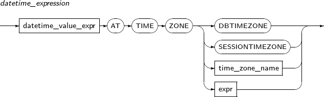 -
구성요소
구성요소 설명 datetime_value_expr datetime_value_expr에는 날짜형 데이터 타입 컬럼 혹은 날짜형 데이터 타입의 표현식이 올 수있다. 현재 TIMESTAMP 혹은 TIMESTAMP WITH TIME ZONE 날짜형 데이터 타입만 허용된다. DBTIMEZONE Tibero에 설정된 데이터베이스 시간대를 사용한다. SESSIONTIMEZONE 현재 세션의 시간대를 사용한다. time_zone_name 명시한 표준 시간대를 사용한다. expr 표현식이 유효한 시간대 형식의 문자열인 경우 해당 시간대를 사용한다. -
예제
다음은 AT TIME ZONE 절에 time_zone_name을 명시하여 시간대 변환하는 예이다.
SQL> SELECT TO_TIMESTAMP('20190908','YYYYMMDD') AT TIME ZONE ('UTC') FROM DUAL; TO_TIMESTAMP('20190908','YYYYMMDD')ATTIMEZONE('UTC') -------------------------------------------------------------------------------- 2019/09/07 15:00:00.000000 UTC
간격형은 시간이나 날짜 사이의 간격을 저장하는 데이터 타입이다. 간격형에는 INTERVAL YEAR TO MONTH 타입, INTERVAL DAY TO SECOND 타입이 있다.
INTERVAL YEAR TO MONTH
INTERVAL YEAR TO MONTH 타입은 연도와 월을 이용하여 시간 간격을 표현하는 데이터 타입이다.
INTERVAL YEAR [(year_precision)] TO MONTH
| 항목 | 설명 |
|---|---|
| year_precision | 연도 단위의 자릿수이다. (기본값: 2) |
INTERVAL DAY TO SECOND
INTERVAL DAY TO SECOND 타입은 일, 시, 분, 초를 이용하여 시간 간격을 표현하는 데이터 타입이다.
INTERVAL DAY [(day_precision)] TO SECOND [(fractional_seconds_precision)]
| 항목 | 설명 |
|---|---|
| day_precision | 일 단위의 자릿수이다. (기본값: 2) |
| fractional_seconds_precision | 초 단위의 소수점 자릿수이다. 0~9사이의 값을 사용할 수 있다. (기본값: 6) |
대용량 객체형은 말 그대로 대용량의 객체를 저장하기 위해 Tibero에서 제공하는 가장 큰 데이터 타입이며, CLOB 타입과 BLOB 타입, XMLTYPE, JSON 타입이 있다.
CLOB
CLOB 타입은 LONG 타입을 확장한 데이터 타입이다.
CLOB 타입은 다음과 같은 특징이 있다.
-
데이터를 최대 4GB까지 저장할 수 있다.
-
테이블 내에서 하나 이상의 컬럼에 선언할 수 있다.
-
데이터에 접근할 때 LONG 타입과 달리 임의의 위치에서 접근할 수 있다.
-
CLOB 타입의 컬럼 값은 같은 테이블의 다른 타입으로 선언된 컬럼 값과 동일한 디스크 블록에 저장되지 않는다. 디스크 블록 내의 로우는 별도의 디스크 블록에 저장된 CLOB 타입의 포인터만 저장하고 있다.
BLOB
BLOB 타입은 LONG RAW 타입을 확장한 데이터 타입이며, 특징은 CLOB 타입과 유사하다.
BLOB 타입은 다음과 같은 특징이 있다.
-
데이터를 최대 4GB까지 저장할 수 있다.
-
테이블 내에서 하나 이상의 컬럼에 선언할 수 있다.
-
데이터에 접근할 때 LONG RAW 타입과 달리 임의의 위치에서 접근할 수 있다.
-
BLOB 타입의 컬럼 값은 같은 테이블의 다른 타입으로 선언된 컬럼 값과 동일한 디스크 블록에 저장되지 않는다. 디스크 블록 내의 로우는 별도의 디스크 블록에 저장된 BLOB 타입의 포인터만 저장하고 있다.
XMLTYPE
XML(Extensible Markup Language)은 구조화되거나 그렇지 않은 모든 데이터를 표현하기 위해 W3C(World Wide Web Consortium)에 의해 표준으로 제정된 형식이다. Tibero에서는 이 XML 데이터를 저장하기 위해 XMLTYPE 타입을 제공하며, 내부적으로 CLOB 형식으로 저장된다.
XMLTYPE 타입은 다음과 같은 특징이 있다.
-
데이터를 CLOB의 최대 크기까지 저장할 수 있다.
-
테이블 내에서 하나 이상의 컬럼에 선언할 수 있다.
-
XML 데이터에 대한 접근, 추출, 질의를 수행할 때 사용한다.
JSON
JSON(JavaScript Object Notation)은 KEY/VALUE 쌍으로 이루어진 데이터 오브젝트를 전달하기 위해 사용하는 개방형 표준 포맷이다. Tibero에서는 이 JSON 데이터를 저장 및 처리하기 위해 JSON 타입을 제공하며, 내부적으로 BLOB 형식으로 저장된다.
JSON 타입은 다음과 같은 특징이 있다.
-
데이터를 BLOB의 최대 크기까지 저장할 수 있다.
-
테이블 내에서 하나 이상의 컬럼에 선언할 수 있다.
-
JSON 데이터에 대한 접근, 추출, 질의를 수행할 때 사용한다.
내재형은 사용자가 명시적으로 선언하지 않아도 Tibero가 삽입되는 로우마다 자동으로 부여하는 데이터 타입이다. 내재형에는 ROWID 타입이 있다.
ROWID
ROWID는 데이터베이스의 각 로우를 식별하기 위해, Tibero가 각 로우마다 자동으로 부여하는 데이터 타입이다. 각 로우가 저장된 물리적인 위치를 포함하고 있다. ROWID에 대한 자세한 내용은 “2.5. 의사 컬럼”을 참고한다.
ROWID
다음은 Tibero에서 비교, 연산 등을 위하여 데이터 타입을 어떻게 변환하는지 살펴본다. 데이터 타입은 사용자가 명시적으로 할 수도 있고, 필요에 의하여 암시적으로 이루어지기도 한다.
사용자가 SQL 변환 함수를 직접 사용하여 타입을 변환할 수 있다.
다음은 타입 변환 함수목록이다(행은 변환 전 타입, 열은 변환 후 타입이다).
[표 2.1] 명시적 타입 변환 (1)
| from \ to | CHAR, VARCHAR2, NCHAR, NVARCHAR2 | NUMBER | 날짜, 시간 및 인터벌 |
|---|---|---|---|
CHAR, VARCHAR2, NCHAR, NVARCHAR2 | TO_CHAR, TO_NCHAR | TO_NUMBER | TO_DATE, TO_TIME, TO_TIMESTAMP, TO_TIMESTAMP_TZ, TO_DSINTERVAL, TO_YMINTERVAL |
| NUMBER | TO_CHAR, TO_NCHAR | - | NUMTOYMINTERVAL, NUMTODSINTERVAL |
날짜, 시간 및 인터벌 | TO_CHAR, TO_NCHAR | X | - |
| RAW | RAWTOHEX | X | X |
| ROWID | ROWIDTOCHAR | X | X |
LONG, LONG RAW | LONG_TO_CHAR | X | X |
CLOB, NCLOB, BLOB | TO_CHAR, TO_NCHAR | X | X |
| BINARY_FLOAT | TO_CHAR, TO_NCHAR | TO_NUMBER | X |
| BINARY_DOUBLE | TO_CHAR, TO_NCHAR | TO_NUMBER | X |
| JSON | TO_CHAR | X | X |
[표 2.2] 명시적 타입 변환 (2)
| from \ to | BINARY_DOUBLE | RAW | ROWID | LONG, LONG RAW |
|---|---|---|---|---|
CHAR, VARCHAR2, NCHAR, NVARCHAR2 | TO_BINARY_DOUBLE | HEXTORAW | CHARTOROWID | LONG_TO_CHAR |
| NUMBER | TO_BINARY_DOUBLE | X | X | X |
날짜, 시간 및 인터벌 | X | X | X | X |
| RAW | - | - | X | X |
| ROWID | X | X | - | X |
LONG, LONG RAW | X | X | X | - |
CLOB, NCLOB, BLOB | X | X | X | X |
| BINARY_FLOAT | X | X | X | X |
| BINARY_DOUBLE | X | X | X | X |
| JSON | X | X | X | X |
[표 2.3] 명시적 타입 변환 (3)
| from \ to | CLOB, NCLOB, BLOB | BINARY_FLOAT | BINARY_DOUBLE | JSON |
|---|---|---|---|---|
CHAR, VARCHAR2, NCHAR, NVARCHAR2 | TO_CLOB | TO_BINARY_FLOAT | TO_BINARY_DOUBLE | X |
| NUMBER | X | TO_BINARY_FLOAT | TO_BINARY_DOUBLE | X |
| 날짜, 시간 및 인터벌 | X | X | X | X |
| RAW | TO_BLOB | X | X | X |
| ROWID | X | X | X | X |
LONG, LONG RAW | TO_LOB | X | X | X |
CLOB, NCLOB, BLOB | TO_CLOB | X | X | X |
| BINARY_FLOAT | X | TO_BINARY_FLOAT | TO_BINARY_DOUBLE | X |
| BINARY_DOUBLE | X | TO_BINARY_FLOAT | TO_BINARY_DOUBLE | X |
| JSON | X | X | X | - |
사용자가 명시적으로 타입을 변환하지 않더라도, 필요하다면 암시적으로 타입을 변환하여 준다.
암시적 타입 변환이 필요한 경우는 아래와 같다.
-
컬럼에 다른 타입의 데이터를 INSERT, UPDATE하는 경우
-
조건문에서 비교하는 양쪽 값이 다른 타입인 경우
다음은 암시적 타입 변환 관계이다(행은 변환 전 타입, 열은 변환 후 타입이다).
[표 2.4] 암시적 타입 변환 (1)
| NUMBER | CHAR | VARCHAR2 | RAW | DATE | TIME | TIMESTAMP | |
|---|---|---|---|---|---|---|---|
| NUMBER | - | O | O | X | X | X | X |
| CHAR | O | - | O | O | O | O | O |
| VARCHAR2 | O | O | - | O | O | O | O |
| RAW | X | O | O | - | X | X | X |
| DATE | X | O | O | X | - | X | O |
| TIME | X | O | O | X | X | - | X |
| TIMESTAMP | X | O | O | X | O | X | - |
| INTERVAL YEAR TO MONTH | X | O | O | X | X | X | X |
| INTERVAL DAY TO SECOND | X | O | O | X | X | X | X |
| LONG | X | X | X | X | X | X | X |
| LONG RAW | X | X | X | X | X | X | X |
| BLOB | X | X | X | O | X | X | X |
| CLOB | X | O | O | X | X | X | X |
| ROWID | X | O | O | X | X | X | X |
| NCHAR | O | O | O | O | O | O | O |
| NVARCHAR2 | O | O | O | O | O | O | O |
| NCLOB | X | O | O | X | X | X | X |
| TIMESTAMP WITH TIMEZONE | X | O | O | X | O | X | O |
| TIMESTAMP WITH LOCAL TIMEZONE | X | O | O | X | O | X | O |
| BINARY_FLOAT | O | O | O | X | X | X | X |
| BINARY_DOUBLE | O | O | O | X | X | X | X |
| JSON | X | O | O | X | X | X | X |
[표 2.5] 암시적 타입 변환 (2)
| INTERVAL YEAR TO MONTH | INTERVAL DAY TO SECOND | LONG | LONG RAW | BLOB | CLOB | ROWID | |
|---|---|---|---|---|---|---|---|
| NUMBER | X | X | O | X | X | O | X |
| CHAR | O | O | O | O | O | O | O |
| VARCHAR2 | O | O | O | O | O | O | O |
| RAW | X | X | O | O | O | O | X |
| DATE | X | X | O | X | X | X | X |
| TIME | X | X | O | X | X | X | X |
| TIMESTAMP | X | X | O | X | X | X | X |
| INTERVAL YEAR TO MONTH | - | X | O | X | X | X | X |
| INTERVAL DAY TO SECOND | X | - | O | X | X | X | X |
| LONG | X | X | - | X | X | X | X |
| LONG RAW | X | X | X | - | X | X | X |
| BLOB | X | X | X | O | - | X | X |
| CLOB | X | X | O | X | X | - | X |
| ROWID | X | X | O | X | X | X | - |
| NCHAR | O | O | O | O | X | O | O |
| NVARCHAR2 | O | O | O | O | X | O | O |
| NCLOB | X | X | O | X | X | O | X |
| TIMESTAMP WITH TIMEZONE | X | X | O | X | X | X | X |
| TIMESTAMP WITH LOCAL TIMEZONE | X | X | O | X | X | X | X |
| BINARY_FLOAT | X | X | O | X | X | X | X |
| BINARY_DOUBLE | X | X | O | X | X | X | X |
| JSON | X | X | X | X | O | O | X |
[표 2.6] 암시적 타입 변환 (3)
| NCHAR | NVARCHAR2 | NCLOB | TIMESTAMP WITH TIMEZONE | TIMESTAMP WITH LOCAL TIMEZONE | BINARY_FLOAT | BINARY_DOUBLE | JSON | |
|---|---|---|---|---|---|---|---|---|
| NUMBER | O | O | X | X | X | O | O | X |
| CHAR | O | O | O | O | O | O | O | O |
| VARCHAR2 | O | O | O | O | O | O | O | O |
| RAW | O | O | X | X | X | X | X | X |
| DATE | O | O | X | O | O | X | X | X |
| TIME | O | O | X | X | X | X | X | X |
| TIMESTAMP | O | O | X | O | O | X | X | X |
| INTERVAL YEAR TO MONTH | O | O | X | X | X | X | X | X |
| INTERVAL DAY TO SECOND | O | O | X | X | X | X | X | X |
| LONG | X | X | X | X | X | X | X | X |
| LONG RAW | X | X | X | X | X | X | X | X |
| BLOB | X | X | X | X | X | X | X | O |
| CLOB | O | O | O | X | X | X | X | O |
| ROWID | O | O | X | X | X | X | X | X |
| NCHAR | - | O | O | O | O | O | O | X |
| NVARCHAR2 | O | - | O | O | O | O | O | X |
| NCLOB | O | O | - | X | X | X | X | X |
| TIMESTAMP WITH TIMEZONE | O | O | X | - | O | X | X | X |
| TIMESTAMP WITH LOCAL TIMEZONE | O | O | X | O | - | X | X | X |
| BINARY_FLOAT | O | O | X | X | X | - | O | X |
| BINARY_DOUBLE | O | O | X | X | X | O | - | X |
| JSON | X | X | X | X | X | X | X | - |
타입비교
다음은 두 값에 대한 타입을 비교할 때 어느쪽 타입으로 맞춰서 비교하는지를 나타내는 표이다.
[표 2.7] 타입비교 (1)
| NUMBER | CHAR | VARCHAR2 | RAW | |
|---|---|---|---|---|
| NUMBER | NUMBER | NUMBER | NUMBER | VARCHAR2 |
| CHAR | NUMBER | CHAR | VARCHAR2 | CHAR |
| VARCHAR2 | NUMBER | VARCHAR2 | VARCHAR2 | VARCHAR2 |
| RAW | VARCHAR2 | CHAR | VARCHAR2 | RAW |
| DATE | X | DATE | DATE | VARCHAR2 |
| TIME | X | TIME | TIME | VARCHAR2 |
| TIMESTAMP | VARCHAR2 | TIMESTAMP | TIMESTAMP | VARCHAR2 |
| INTERVAL YEAR TO MONTH | VARCHAR2 | INTERVAL YEAR TO MONTH | INTERVAL YEAR TO MONTH | VARCHAR2 |
| INTERVAL DAY TO SECOND | VARCHAR2 | INTERVAL DAY TO SECOND | INTERVAL DAY TO SECOND | VARCHAR2 |
| LONG | X | LONG | LONG | VARCHAR2 |
| LONG RAW | VARCHAR2 | LONG | LONG | VARCHAR2 |
| BLOB | X | X | X | X |
| CLOB | X | CLOB | CLOB | CLOB |
| ROWID | VARCHAR2 | ROWID | ROWID | VARCHAR2 |
| NCHAR | NUMBER | NCHAR | NVARCHAR2 | NCHAR |
| NVARCHAR2 | NUMBER | NVARCHAR2 | NVARCHAR2 | NVARCHAR2 |
| NCLOB | X | NCLOB | NCLOB | NCLOB |
| TIMESTAMP WITH TIMEZONE | VARCHAR2 | TIMESTAMP | TIMESTAMP | VARCHAR2 |
| TIMESTAMP WITH LOCAL TIMEZONE | VARCHAR2 | TIMESTAMP | TIMESTAMP | VARCHAR2 |
| BINARY_FLOAT | BINARY_FLOAT | BINARY_FLOAT | BINARY_FLOAT | VARCHAR2 |
| BINARY_DOUBLE | BINARY_DOUBLE | BINARY_DOUBLE | BINARY_DOUBLE | VARCHAR2 |
| JSON | X | X | X | X |
[표 2.8] 타입비교 (2)
| DATE | TIME | TIMESTAMP | INTERVAL YEAR TO MONTH | |
|---|---|---|---|---|
| NUMBER | X | X | VARCHAR2 | VARCHAR2 |
| CHAR | DATE | TIME | TIMESTAMP | INTERVAL YEAR TO MONTH |
| VARCHAR2 | DATE | TIME | TIMESTAMP | INTERVAL YEAR TO MONTH |
| RAW | VARCHAR2 | VARCHAR2 | VARCHAR2 | VARCHAR2 |
| DATE | DATE | VARCHAR2 | TIMESTAMP | VARCHAR2 |
| TIME | VARCHAR2 | TIME | VARCHAR2 | VARCHAR2 |
| TIMESTAMP | TIMESTAMP | VARCHAR2 | TIMESTAMP | VARCHAR2 |
| INTERVAL YEAR TO MONTH | VARCHAR2 | VARCHAR2 | VARCHAR2 | INTERVAL YEAR TO MONTH |
| INTERVAL DAY TO SECOND | VARCHAR2 | VARCHAR2 | VARCHAR2 | INTERVAL DAY TO SECOND |
| LONG | X | X | X | X |
| LONG RAW | VARCHAR2 | VARCHAR2 | VARCHAR2 | VARCHAR2 |
| BLOB | X | X | X | X |
| CLOB | X | X | X | X |
| ROWID | VARCHAR2 | VARCHAR2 | VARCHAR2 | VARCHAR2 |
| NCHAR | DATE | TIME | TIMESTAMP | INTERVAL YEAR TO MONTH |
| NVARCHAR2 | DATE | TIME | TIMESTAMP | INTERVAL YEAR TO MONTH |
| NCLOB | X | X | X | X |
| TIMESTAMP WITH TIMEZONE | TIMESTAMP | VARCHAR2 | TIMESTAMP WITH TIMEZONE | VARCHAR2 |
| TIMESTAMP WITH LOCAL TIMEZONE | TIMESTAMP | VARCHAR2 | TIMESTAMP WITH LOCAL TIMEZONE | VARCHAR2 |
| BINARY_FLOAT | X | X | VARCHAR2 | VARCHAR2 |
| BINARY_DOUBLE | X | X | VARCHAR2 | VARCHAR2 |
| JSON | X | X | X | X |
[표 2.9] 타입비교 (3)
| INTERVAL DAY TO SECOND | LONG | LONG RAW | BLOB | |
|---|---|---|---|---|
| NUMBER | VARCHAR2 | X | VARCHAR2 | X |
| CHAR | INTERVAL DAY TO SECOND | LONG | LONG | X |
| VARCHAR2 | INTERVAL DAY TO SECOND | LONG | LONG | X |
| RAW | VARCHAR2 | VARCHAR2 | VARCHAR2 | X |
| DATE | VARCHAR2 | X | VARCHAR2 | X |
| TIME | VARCHAR2 | X | VARCHAR2 | X |
| TIMESTAMP | VARCHAR2 | X | VARCHAR2 | X |
| INTERVAL YEAR TO MONTH | VARCHAR2 | X | VARCHAR2 | X |
| INTERVAL DAY TO SECOND | VARCHAR2 | X | VARCHAR2 | X |
| LONG | X | LONG | LONG | X |
| LONG RAW | VARCHAR2 | LONG | LONG RAW | X |
| BLOB | X | X | X | BLOB |
| CLOB | X | LONG | LONG | X |
| ROWID | VARCHAR2 | ROWID | VARCHAR2 | X |
| NCHAR | INTERVAL DAY TO SECOND | X | X | X |
| NVARCHAR2 | INTERVAL DAY TO SECOND | X | X | X |
| NCLOB | X | X | X | X |
| TIMESTAMP WITH TIMEZONE | VARCHAR2 | X | VARCHAR2 | X |
| TIMESTAMP WITH LOCAL TIMEZONE | VARCHAR2 | X | VARCHAR2 | X |
| BINARY_FLOAT | VARCHAR2 | X | VARCHAR2 | X |
| BINARY_DOUBLE | VARCHAR2 | X | VARCHAR2 | X |
| JSON | X | X | X | X |
[표 2.10] 타입비교 (4)
| CLOB | ROWID | NCHAR | NVARCHAR2 | NCLOB | |
|---|---|---|---|---|---|
| NUMBER | X | VARCHAR2 | NUMBER | NUMBER | X |
| CHAR | CLOB | ROWID | NCHAR | NVARCHAR2 | NCLOB |
| VARCHAR2 | CLOB | ROWID | NCHAR | NVARCHAR2 | NCLOB |
| RAW | CLOB | VARCHAR2 | NCHAR | NVARCHAR2 | NCLOB |
| DATE | X | VARCHAR2 | DATE | DATE | X |
| TIME | X | VARCHAR2 | TIME | TIME | X |
| TIMESTAMP | X | VARCHAR2 | TIMESTAMP | TIMESTAMP | X |
| INTERVAL YEAR TO MONTH | X | VARCHAR2 | INTERVAL YEAR TO MONTH | INTERVAL YEAR TO MONTH | X |
| INTERVAL DAY TO SECOND | X | VARCHAR2 | INTERVAL DAY TO SECOND | INTERVAL DAY TO SECOND | X |
| LONG | LONG | ROWID | X | X | X |
| LONG RAW | LONG | VARCHAR2 | X | X | X |
| BLOB | X | X | X | X | X |
| CLOB | CLOB | ROWID | CLOB | CLOB | NCLOB |
| ROWID | ROWID | ROWID | ROWID | ROWID | X |
| NCHAR | CLOB | ROWID | NCHAR | NVARCHAR2 | NCLOB |
| NVARCHAR2 | CLOB | ROWID | NCHAR | NVARCHAR2 | NCLOB |
| NCLOB | NCLOB | X | NCLOB | NCLOB | NCLOB |
| TIMESTAMP WITH TIMEZONE | X | VARCHAR2 | TIMESTAMP | TIMESTAMP | X |
| TIMESTAMP WITH LOCAL TIMEZONE | X | VARCHAR2 | TIMESTAMP | TIMESTAMP | X |
| BINARY_FLOAT | X | VARCHAR2 | BINARY_FLOAT | BINARY_FLOAT | X |
| BINARY_DOUBLE | X | VARCHAR2 | BINARY_DOUBLE | BINARY_DOUBLE | X |
| JSON | X | X | X | X | X |
[표 2.11] 타입비교 (5)
| TIMESTAMP WITH TIMEZONE | TIMESTAMP WITH LOCAL TIMEZONE | BINARY_FLOAT | BINARY_DOUBLE | JSON | |
|---|---|---|---|---|---|
| NUMBER | VARCHAR2 | VARCHAR2 | BINARY_FLOAT | BINARY_DOUBLE | X |
| CHAR | TIMESTAMP WITH TIMEZONE | TIMESTAMP WITH LOCAL TIMEZONE | BINARY_FLOAT | BINARY_DOUBLE | X |
| VARCHAR2 | TIMESTAMP WITH TIMEZONE | TIMESTAMP WITH LOCAL TIMEZONE | BINARY_FLOAT | BINARY_DOUBLE | X |
| RAW | NCLOB | NCLOB | NCLOB | NCLOB | X |
| DATE | TIMESTAMP WITH TIMEZONE | TIMESTAMP WITH LOCAL TIMEZONE | X | X | X |
| TIME | VARCHAR2 | VARCHAR2 | X | X | X |
| TIMESTAMP | TIMESTAMP WITH TIMEZONE | TIMESTAMP WITH LOCAL TIMEZONE | VARCHAR2 | VARCHAR2 | X |
| INTERVAL YEAR TO MONTH | VARCHAR2 | VARCHAR2 | VARCHAR2 | VARCHAR2 | X |
| INTERVAL DAY TO SECOND | VARCHAR2 | VARCHAR2 | VARCHAR2 | VARCHAR2 | X |
| LONG | X | X | X | X | X |
| LONG RAW | VARCHAR2 | VARCHAR2 | VARCHAR2 | VARCHAR2 | X |
| BLOB | X | X | X | X | X |
| CLOB | X | X | X | X | X |
| ROWID | VARCHAR2 | VARCHAR2 | VARCHAR2 | VARCHAR2 | X |
| NCHAR | TIMESTAMP WITH TIMEZONE | TIMESTAMP WITH LOCAL TIMEZONE | BINARY_FLOAT | BINARY_DOUBLE | X |
| NVARCHAR2 | TIMESTAMP WITH TIMEZONE | TIMESTAMP WITH LOCAL TIMEZONE | BINARY_FLOAT | BINARY_DOUBLE | X |
| NCLOB | X | X | X | X | X |
| TIMESTAMP WITH TIMEZONE | TIMESTAMP WITH TIMEZONE | TIMESTAMP WITH TIMEZONE | VARCHAR2 | VARCHAR2 | X |
| TIMESTAMP WITH LOCAL TIMEZONE | TIMESTAMP WITH TIMEZONE | TIMESTAMP WITH LOCAL TIMEZONE | VARCHAR2 | VARCHAR2 | X |
| BINARY_FLOAT | VARCHAR2 | VARCHAR2 | BINARY_FLOAT | BINARY_DOUBLE | X |
| BINARY_DOUBLE | VARCHAR2 | VARCHAR2 | BINARY_DOUBLE | BINARY_DOUBLE | X |
| JSON | X | X | X | X | JSON |
리터럴(Literal)은 상수 값을 나타내는 단어이다. 상수란 변수에 대응되는 개념으로 말 그대로 변하지 않는 값을 의미한다. 문자열 리터럴은 작은따옴표를 사용하여 다른 스키마 객체와 구분한다. 리터럴은 SQL 문장에서 연산식이나 조건식의 일부로 사용할 수 있다.
문자열 리터럴은 문자열을 표현할 때 사용하는 리터럴이다.
문자열 리터럴은 다음과 같은 특징이 있다.
-
최대 4,000byte까지 선언할 수 있다.
-
연산식이나 조건식에 문자열 리터럴이 사용되면, 문자열 리터럴은 CHAR 타입으로 취급된다.
-
CHAR 타입의 데이터와 문자형 리터럴을 비교하는 경우 더 짧은 길이를 가진 데이터에 공백 문자를 삽입하여 비교한다.
-
VARCHAR 타입의 데이터와 문자형 리터럴을 비교하는 경우 공백 문자를 삽입하지 않고 비교한다.
문자열 리터럴의 세부 내용은 다음과 같다.
-
문법
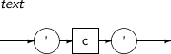 -
구성요소
구성요소 설명 c 사용자의 문자 집합에 속한 문자이다. ’ 문자열 리터럴 안에서 이스케이프 부호(Escape Code)를 사용하려면 문자 양쪽에 작은따옴표(' ')를 붙여야 한다.
문자열 리터럴 안에 작은따옴표를 표현하려면 작은따옴표를 두 번 연속해서 사용해야 한다.
문자열 리터럴 안에 작은따옴표를 일반 문자 와 같이 취급하려면 q string을 사용하면 된다. q'[[string]]'$,q'"[string]"'$,q'|[string]|'$ q'$[string]'$ 으로 문자열 리터럴을 사용하면 [string] 내부의 작은따옴표는 일반 문자와 같이 취급된다.
-
예제
다음은 문자열 리터럴의 예이다.
'Tibero' 'Database' '2009/11/11'
숫자 리터럴은 정수 또는 실수를 표현할 때 사용하는 리터럴이다.
숫자 리터럴은 다음과 같은 특징이 있다.
-
정수 리터럴과 실수 리터럴이 있다.
-
NUMBER 타입이 표현할 수 있는 최대 38자리의 정밀도를 초과하는 경우 숫자 리터럴은 NUMBER 타입의 최대 정밀도에 맞춘 후 나머지 수를 반올림 처리한다. 또한, NUMBER 타입이 표현할 수 있는 범위를 넘어서는 숫자 리터럴이 입력되면 에러가 발생한다.
-
다음과 같은 부동 소수점 리터럴이 있다.
리터럴 설명 BINARY_FLOAT_NAN 단일 정밀도 NaN(Not A Number) BINARY_FLOAT_INFINITY 단일 정밀도 양의 무한대 BINARY_DOUBLE_NAN 2배 정밀도 NaN(Not A Number) BINARY_DOUBLE_INFINITY 2배 정밀도 양의 무한대
숫자 리터럴의 세부 내용은 다음과 같다.
-
문법
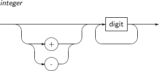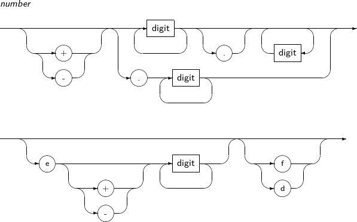 -
구성요소
-
예제
다음은 숫자 리터럴의 예이다.
123 +1.23 0.123 123e-123 -123
다음은 부동 소수점 리터럴의 예이다.
123f +1.23F 0.123d -123D
날짜형 리터럴은 날짜와 시간 정보를 표현하는 리터럴이다. 날짜형 리터럴에는 DATE 리터럴, TIME 리터럴, TIMESTAMP 리터럴, TIMESTAMP WITH TIME ZONE 리터럴이 있다.
DATE
DATE 리터럴은 날짜와 시간 정보를 표현하는 날짜형 리터럴이다.
DATE 리터럴은 다음과 같은 특징이 있다.
-
특별한 속성
세기, 년, 월, 일, 시, 분, 초의 특별한 속성이 있다.
-
날짜형 리터럴 변환
Tibero에서는 TO_DATE 함수를 사용하여 날짜 값을 직접 지정하거나 문자 리터럴이나 숫자 리터럴로 표현된 날짜 값을 DATE 리터럴로 변환할 수 있다. 이때 날짜를 리터럴로 표현하려면 그레고리안 달력을 사용한다.
TO_DATE('2005/01/01 12:38:20', 'YY/MM/DD HH24:MI:SS')기본 날짜 형식은 'YYYY/MM/DD'이며 초기화 파라미터 파일에 NLS_DATE_FORMAT 파라미터로 정의되어 있다. NLS_DATE_FORMAT은 날짜 형식을 지정하는 파라미터이다.
만일 시간 정보가 없는 값으로 DATE 리터럴을 표현해야 한다면 기본 시간은 자정 (HH24 00:00:00, HH 12:00:00)이다. 또한, 날짜 정보가 없는 값으로 DATE 리터럴을 표현해야 한다면 기본 날짜는 현재 시스템의 시간을 기준으로 달의 첫째 날로 지정된다.
따라서 DATE 리터럴을 비교할 때는 리터럴의 시간정보가 포함된 에러인지 확인이 필요하다. 한쪽에만 시간 정보가 있고 다른 쪽에는 시간 정보가 없을 경우 두 날짜가 같다고 비교하기 위해서는 시간 정보를 제거하고 비교해야 하는데 이때 TRUNC 함수를 사용하면 된다.
다음은 TRUNC 함수를 사용한 예이다.
TO_DATE('2005/01/01', 'YY/MM/DD') = TRUNC(TO_DATE('2005/01/01 12:38:20', 'YY/MM/DD HH24:MI:SS')) -
DATE '2005-01-01'
-
시간 정보가 없다.
-
기본 형식은 'YYYY-MM-DD'이다.
-
구분자는 하이픈(-) 외에도 슬래시(/), 애스터리스크(*), 점(.) 등이 있다.
-
TIME
TIME 리터럴은 시간 정보를 표현하는 날짜형 리터럴이다.
TIME 리터럴은 다음과 같은 특징이 있다.
-
특별한 속성
시, 분, 초, 소수점 아래의 초의 특별한 속성이 있다.
-
날짜형 리터럴 변환
Tibero에서는 TO_TIME 함수를 사용하여 시간 값을 직접 지정하거나 문자 리터럴이나 숫자 리터럴로 표현된 시간 값을 TIME 리터럴로 변환할 수 있다.
TO_TIME('12:38:20.123456789', 'HH24:MI:SSXFF') -
TIME '10:23:10.123456789' TIME '10:23:10' TIME '10:23' TIME '10'
-
기본 형식은 'HH24:MI:SS.FF9'이다.
-
분 이하는 생략할 수 있다.
-
TIMESTAMP
TIMESTAMP 리터럴은 DATE 리터럴을 확장한 날짜형 리터럴이다.
TIMESTAMP 리터럴은 다음과 같은 특징이 있다.
-
특별한 속성
'년, 월, 일'의 날짜와 '시, 분 ,초', '소수점 아래의 초'의 특별한 속성이 있다.
-
날짜형 리터럴 변환
Tibero에서는 TO_TIMESTAMP 함수를 사용하여 문자열 리터럴이나 숫자 리터럴로 표현된 날짜 값을 TIMESTAMP 리터럴로 변환할 수 있다.
TO_TIMESTAMP('09-Aug-01 12:07:15.50', 'DD-Mon-RR HH24:MI:SS.FF')기본 TIMESTAMP 형식은 초기화 파라미터 파일에 NLS_TIMESTAMP_FORMAT 파라미터로 정의되어 있다. NLS_TIMESTAMP_FORMAT은 TIMESTAMP 형식을 지정하는 파라미터이다.
-
TIMESTAMP '2005/01/31 08:13:50.112' TIMESTAMP '2005/01/31 08:13:50' TIMESTAMP '2005/01/31 08:13' TIMESTAMP '2005/01/31 08' TIMESTAMP '2005/01/31'
-
기본 형식은 'YYYY/MM/DD HH24:MI:SSxFF' 이다.
-
날짜 부분('YYYY/MM/DD') 이외에는 생략할 수 있다.
-
소수점 아래의 초('FF') 부분은 0~9자리까지 표현할 수 있다.
-
TIMESTAMP WITH TIME ZONE
TIMESTAMP WITH TIME ZONE 리터럴은 TIMESTAMP 리터럴을 확장한 날짜형 리터럴이다.
TIMESTAMP WITH TIME ZONE 리터럴은 다음과 같은 특징이 있다.
-
기본 속성
TIMESTAMP 타입과 동일하게 '년, 월, 일'의 날짜와 '시, 분 ,초', '소수점 아래의 초'의 속성이 있다.
-
날짜형 리터럴 변환
Tibero에서는 TO_TIMESTAMP_TZ 함수를 사용하여 문자열 리터럴이나 숫자 리터럴로 표현된 날짜 값을 TIMESTAMP WITH TIME ZONE 리터럴로 변환할 수 있다.
TO_TIMESTAMP_TZ('2004-05-15 19:25:43 Asia/Seoul', 'YYYY-MM-DD HH24:MI:SS.FF TZR') TO_TIMESTAMP_TZ('1988-11-21 10:31:58.754 -07:30', 'YYYY-MM-DD HH24:MI:SS.FF TZH: TZM')기본 TIMESTAMP WITH TIME ZONE 형식은 초기화 파라미터 파일에 NLS_TIMESTAMP_TZ_FORMAT 파라미터로 정의되어 있다. NLS_TIMESTAMP_TZ_FORMAT은 TIMESTAMP WITH TIME ZONE 형식을 지정하는 파라미터이다.
-
TIMESTAMP '1993/12/11 13:37:43.27 Asia/Seoul' TIMESTAMP '1993/12/11 13:37:43.27 +09:00' TIMESTAMP '1993/12/11 13:37:43.27 +07'
-
기본 형식은 'YYYY/MM/DD HH24:MI:SSXFF TZR' 이다.
-
소수점 아래의 초('FF') 부분은 0~9자리까지 표현할 수 있다.
-
시간대('TZR') 부분은 지역이름 또는 오프셋 형식으로 표현할 수 있다. 만약 시간대('TZR') 부분을 생략하는 경우엔 TIMESTAMP 타입 리터럴로 해석된다.
-
TIMESTAMP WITH LOCAL TIME ZONE
TIMESTAMP WITH LOCAL TIME ZONE 리터럴은 TIMESTAMP 리터럴과 동일한 형식을 사용한다.
간격 리터럴(Interval literal) 은 특정 시간과 시간 사이의 간격을 표현하는 리터럴이다. 이러한 간격은 '연과 월'로 구성된 단위나 '날짜, 시간, 분, 초'로 구성된 단위 중 하나로 표현될 수 있다.
Tibero에서는 간격 리터럴을 다음과 같이 두 가지 타입으로 지원한다.
-
YEAR TO MONTH
간격을 가장 가까운 월 단위로 표현하는 타입이다.
-
DAY TO SECOND
간격을 가장 가까운 분 단위로 표현하는 타입이다.
이처럼 각 타입의 리터럴은 첫 번째 필드와 생략 가능한 두 번째 필드로 구성된다. 첫 번째 필드는 표현할 날짜 또는 시간의 기본 단위를 정의하고, 두 번째 필드는 기본 단위의 최소 증가 단위를 나타낸다. 간격 리터럴은 같은 타입의 간격 리터럴끼리 서로 더하거나 뺄 수 있다.
YEAR TO MONTH
YEAR TO MONTH 타입은 간격을 연과 월로 표현하는 간격 리터럴이다.
YEAR TO MONTH의 세부 내용은 다음과 같다.
-
문법
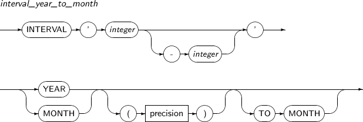 -
구성 요소
구성 요소 설명 integer [-integer] 리터럴의 첫 번째와 생략 가능한 두 번째 필드의 값을 나타낸다.
첫 번째 필드가 YEAR이고, 두 번째 필드가 MONTH이면 두 번째 필드는 0과 11 사이의 값이어야 한다. 이때 두 번째 필드는 첫 번째 필드보다 더 작은 단위를 나타내야 한다. 즉, MONTH TO YEAR는 잘못된 표현이다.
precision YEAR 단위의 최대 정밀도를 나타낸다.
0과 9 사이의 값이어야 하고, 기본값은 2이다.
-
예제
다음은 YEAR TO MONTH의 예이다.
INTERVAL '12-3' YEAR TO MONTH INTERVAL '123' YEAR(3) INTERVAL '123' MONTH INTERVAL '1' YEAR INTERVAL '1234' MONTH(3)
DAY TO SECOND
DAY TO SECOND 타입은 간격을 '날짜, 시간, 분, 초'로 표현하는 간격 리터럴이다.
DAY TO SECOND의 세부 내용은 다음과 같다.
-
문법
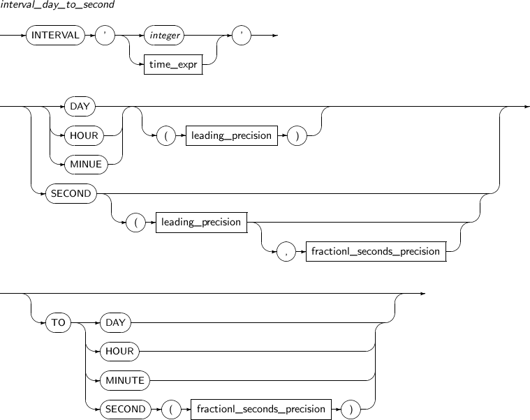 -
구성요소
구성요소 설명 integer 일 수를 나타낸다. time_expr time_expr은 HH[:MI[:SS[.n]]] 또는 MI[:SS[.n]] 또는 SS[.n]과 같은 형식으로 나타낸다. n은 초의 소수점 아래 자리를 나타낸다. 만일 n이 fractional_seconds_precision에 명시된 값보다 큰 자릿수의 값이면 n은 fractional_seconds_precision 값에 맞추어 반올림된다.
첫 번째 필드가 DAY인 경우에는 일 수를 표시하는 정수와 공백 문자 이후에 time_expr을 표시한다.
leading_precision 첫 번째 필드의 정밀도를 나타낸다.
0과 9 사이의 정수 값을 갖고, 기본값은 2이다.
fractional_seconds_precision 리터럴의 두 번째 필드의 정밀도를 나타낸다.
1과 9 사이의 값을 갖고, 기본값은 6이다. 이때 두 번째 필드는 첫 번째 필드보다 더 작은 단위를 나타내야 한다. 즉, MINUTE TO DAY는 잘못된 표현이다. 그리고 두 번째 필드가 HOUR, MINUTE 또는 SECOND일 경우에는 각각 0 ~ 23, 0 ~ 59, 그리고 0 ~ 59.999999999 사이의 값을 가져야 한다.
-
예제
다음은 DAY TO SECOND의 예이다.
INTERVAL '1 2:3:4.567' DAY TO SECOND(3) INTERVAL '1 2:3' DAY TO MINUTE INTERVAL '123 4' DAY(3) TO HOUR INTERVAL '123' DAY(3) INTERVAL '12:34:56.1234567' HOUR TO SECOND(7) INTERVAL '12:34' HOUR TO MINUTE INTERVAL '12' HOUR INTERVAL '12:34' MINUTE TO SECOND INTERVAL '12' MINUTE INTERVAL '12.345678' SECOND(2,6)
형식 문자열이란 NUMBER 타입과 날짜형 타입의 값을 문자열로 변환하기 위한 형식을 정의한 것이다.
형식 문자열은 문자열 타입으로 변환된 NUMBER 타입과 날짜형 타입의 값을 다시 원래의 타입의 값으로 변환하는 데 필요하다.
문자열 타입과 날짜형 타입, NUMBER 타입의 값 사이에는 데이터 타입의 변환을 할 수 있다. 하지만, 실제 값에 따라 변환이 불가능한 경우도 있다. 예를 들어 문자열 '12345'는 NUMBER 타입의 값으로 변환할 수 있지만, 문자열 'ABCDE'는 변환할 수 없다.
디폴트 시간 형식으로 되어 있지 않은 문자열이나 숫자 이외의 문자를 포함하는 문자열은 각각 날짜형 또는 NUMBER 타입의 값으로 변환할 수 없다. 이러한 경우 반드시 TO_DATE, TO_NUMBER 등의 변환 함수를 사용해야 한다.
형식 문자열은 TO_CHAR, TO_DATE, TO_NUMBER 함수의 파라미터로 사용된다. 만약 함수 파라미터로 형식 문자열이 주어지지 않으면, 디폴트 형식을 사용하여 변환한다. 함수에 대한 자세한 내용은 “제4장 함수”를 참고한다.
NUMBER 타입의 형식 문자열은 TO_CHAR 함수와 TO_NUMBER 함수에서 파라미터로 사용할 수 있다.
| 함수 | 설명 |
|---|---|
| TO_CHAR | NUMBER 타입의 값을 문자열로 변환한다. |
| TO_NUMBER | 문자열을 NUMBER 타입의 값으로 변환한다. |
NUMBER 타입의 형식 문자열은 다음과 같은 특징이 있다.
-
여러 가지 형식 요소로 구성된다. 소수점 위아래의 자릿수, 음양 부호의 출력, 콤마(,) 또는 지수 형식 등을 출력할 수 있다.
-
화폐 단위를 나타내는 기호($, W 등)를 삽입할 수 있다.
-
16진수로 출력할 수 있다.
-
별도의 문자열을 삽입할 수 없다.
-
대소문자를 구분하는 형식 요소가 없다.
다음은 NUMBER 타입의 형식 문자열에 포함될 수 있는 형식 요소이다.
| 형식 요소 | 예 | 설명 |
|---|---|---|
| 콤마 (,) | 9,999 | 해당 위치에 콤마(,)를 찍는다. 콤마를 여러 개 찍을 수도 있다. 형식 문자열을 콤마로 시작할 수는 없다. |
| 점 (.) | 99.99 | 소수점을 출력한다. 형식 문자열 내에서는 하나의 소수점만 나올 수 있다. |
| $ | $9999 | 숫자의 시작에 달러 문자($)를 출력한다. |
| 0 | 0999 9990 | 숫자의 앞이나 뒤에 0을 채운다. 해당되는 위치에 0을 찍을 수 있는 경우에만 0이 출력되는 것을 보장한다. |
| 9 | 9999 | (자릿수 + 1)개의 문자를 사용해서 숫자를 출력한다. 플러스(+)나 마이너스(-)가 추가로 붙을 수 있다(양수일 때는 공백, 음수일 때는 마이너스가 출력된다). 숫자의 앞쪽에 올 수 있는 0은 출력하지 않는다. 다만, 소수점 없이 정수만을 출력할 때 정수 부분이 0일 경우는 0을 출력한다. |
| B | B9999 | 0의 값을 공백으로 출력한다. |
| D | 99D99 | 해당 위치에 소수점을 출력한다. 현재는 점(.)과 기능이 같다. |
| EEEE | 9.9EEEE | 과학적 기수법에 의해 출력한다. |
| G | 9G999 | 해당 위치에 콤마(,)를 찍는다. 현재는 콤마와 기능이 같다. |
| L 또는 U | L9999 U9999 | 숫자의 시작에 달러 문자($)를 출력한다. 현재는 $와 기능이 같다. |
| MI | 9999MI | 음수에 대해 마이너스를 뒤에 붙인다. 양수의 경우에는 공백을 출력한다. 형식 문자열의 맨 뒤에만 사용할 수 있다. |
| RN (rn) | RN rn | 로마 숫자로 출력한다. RN은 대문자로, rn은 소문자로 출력한다. 숫자는 1~ 3,999 사이의 정수만 가능하다. |
| S | S9999 9999S | 양수/음수 부호를 해당 위치에 출력한다. 형식 문자열의 맨 처음 또는 맨 끝에서만 사용할 수 있다. |
| TM | TM | 가장 작은 수의 문자를 사용해서 숫자를 표현한다. TM9와 TMe의 형태로 사용할 수 있다. TM9는 TM과 같다.
|
다음은 TO_NUMBER 함수를 사용했을 때 각 NUMBER 타입의 값이 형식 문자열에 따라 어떻게 출력되는지를 보여준다.
| NUMBER 타입의 값 | 형식 문자열 | 출력 결과 |
|---|---|---|
| 0 | 99.99 | ' .00' |
| 0.1 | 99.99 | ' .10' |
| -0.1 | 99.99 | ' -.10' |
| 0 | 90.99 | ' 0.00' |
| 0.1 | 90.99 | ' 0.10' |
| -0.1 | 90.99 | ' -0.10' |
| 0 | 9999 | ' 0' |
| 1 | 9999 | ' 1' |
| 0.1 | 9999 | ' 0' |
| -0.1 | 9999 | ' -0' |
| 123.456 | 999.999 | ' 123.456' |
| -123.456 | 999.999 | '-123.456' |
| 123.456 | FM999.999 | '123.456' |
| 123.45 | 999.009 | ' 123.450' |
| 123.45 | FM999.009 | '123.45' |
| 123 | FM999.009 | '123.00' |
| 12345 | 99999S | '12345+' |
날짜형 타입의 형식 문자열은 TO_CHAR 함수, TO_DATE 함수, TO_TIMESTAMP 함수, TO_TIMESTAMP_TZ 함수에서 파라미터로 사용할 수 있다.
| 함수 | 설명 |
|---|---|
| TO_CHAR | 날짜형 타입의 값을 문자열로 변환한다. |
| TO_DATE | 문자열을 날짜형 타입의 값으로 변환한다. |
| TO_TIMESTAMP | 문자열을 날짜/시간형 타입의 값으로 변환한다. |
| TO_TIMESTAMP_TZ | 문자열을 시간대를 포함하는 날짜/시간형 타입의 값으로 변환한다. |
날짜형 타입의 형식 문자열은 다음과 같은 특징이 있다.
-
여러 가지 형식 요소로 구성된다. 날짜형 타입에 포함된 '연, 월, 일, 시, 분, 초' 등의 값을 각각 어떤 형식으로 출력할 것인지 지정한다. 예를 들어 연도를 나타내는 형식 요소 문자열인 'YYYY'와 'YY'의 경우 연도의 마지막 네 자리 또는 두 자리만 출력하도록 한다. 즉, 2009년의 경우 각각 '2009'와 '09'를 출력한다.
-
하이픈(-) 또는 슬래시(/)를 삽입할 수 있다. 만약 형식 문자열 내에 형식 요소 이외의 문자열을 삽입하고 싶다면 큰따옴표(" ")를 이용하여 나타낸다.
-
대소문자를 구분하는 형식 요소가 있다. 예를 들어 요일을 출력하기 위한 형식 요소인 'DAY'는 요일 문자열 전체를 대문자로, 'Day'는 맨 앞 글자만 대문자로, 'day'는 전체를 소문자로 출력한다. 월요일의 경우, 각각 'MONDAY', 'Monday', 'monday'로 출력한다.
다음은 날짜형 타입의 형식 문자열에 포함될 수 있는 형식 요소이다.
| 형식 요소 | TO_* 함수의 입력으로 사용 가능 여부 | 설명 |
|---|---|---|
- , . ; : / "text" | - | 결과 값에 해당하는 위치에 그대로 출력된다. |
AD A.D. BC B.C. | 예 | 서기 또는 기원 전을 표시한다. |
AM A.M. PM P.M. | 예 | 오전 또는 오후를 표시한다. |
CC SCC | 아니오 | 세기를 출력한다. (예: 2005년일 때는 21을 반환한다.) SCC는 기원전일 경우 마이너스(-)를 붙인다. |
| D | 아니오 | 1주일 중 몇 번째 날인지 출력한다. (1-7) |
| DAY | 아니오 | 요일을 출력한다. (예: THURSDAY) |
| DD | 예 | 1개월 중 몇 번째 날인지 출력한다. (1-31) |
| DDD | 예 | 1년 중 몇 번째 날인지 출력한다. (1-366) |
| DY | 아니오 | 축약 표기한 요일을 출력한다. (예: THU) |
| FF[1~9] | 예 | 소수점 이하 자리의 초를 나타낸다. FF 뒤에 명시한 숫자(1~9) 만큼 소수점 이하 자릿수가 출력된다. 명시하지 않으면 데이터 타입의 디폴트 정밀도를 따른다. |
| FM | 예 | 앞뒤 공백을 제거하고 출력하도록 하는 형식 조절자이다. |
| FX | 예 | 형식 문자열과 입력 문자열의 일치여부를 검사하는 형식 조절자이다. |
HH HH12 | 예 | 시간을 출력한다. (1-12) |
| HH24 | 예 | 시간을 출력한다. (0-23) |
IYYYY IYYY IYY IY | 아니오 | 4(3/2/1)자릿수 연도 표기를 ISO 표준에 의거 출력한다. |
| MI | 예 | 분을 출력한다. (0-59) |
| MM | 예 | 달을 출력한다. (1-12) |
| MON | 예 | 축약된 달 이름을 출력한다. (예: DEC) |
| MONTH | 예 | 달을 출력한다. (예: DECEMBER) |
| Q | 아니오 | 분기를 출력한다. (1-4) |
| RM | 예 | 달을 로마 숫자로 출력한다. (I-XII) |
| RR | 예 | 두 자릿수의 연도의 입력 값에 따라 몇 세기인지 자동으로 조절한다. |
| RRRR | 예 | 반올림한 연도를 표기한다. 4자리 또는 2자리를 입력받는다. 2자리로 입력했을 경우는 RR과 똑같이 동작한다. |
| SS | 예 | 초를 출력한다. (0-59) |
| SSSSS | 예 | 자정을 기준으로 현재 몇 초인지 출력한다. (0-86399) |
| WW | 아니오 | 1년 중 몇 번째 주인지 출력한다. (1-53) 첫 번째 주는 1월 1일에 시작하고 1월 7일에 끝난다. |
| W | 아니오 | 1개월 중 몇 번째 주인지 출력한다. (1-5) 첫 번째 주는 그 달 1일에 시작하고 그 달 7일에 끝난다. |
| X | 예 | 점(.)을 출력한다. TIMESTAMP를 출력하는 경우 소수점 자릿수를 표현하기 위해서 사용된다. |
YEAR SYEAR | 아니오 | 숫자로 된 연도를 단어로 풀어 쓴다. SYEAR는 기원전 연도에 마이너스(-)를 붙인다. |
YYYY SYYYY | 아니오 | 4자릿수 연도를 표기한다. SYYYY는 기원전 연도에 마이너스(-)를 붙인다. |
YYY YY Y | 예 | 3(2/1)자릿수 연도를 출력한다. |
| TZH | 예 | 시간대에서의 시간을 출력한다. |
| TZM | 예 | 시간대에서의 분을 출력한다. |
| TZR | 예 | 시간대에서의 지역을 출력한다. |
| TZD | 예 | 시간대에서의 일광 절약시간 약어를 출력한다. 이 값은 반드시 TZR에서의 지역과 일치해야 한다. |
| EE | 예 | 연호를 출력한다(Japanese Imperial and Thai Buddha calendars). |
| E | 예 | 연호의 약어를 출력한다(Japanese Imperial and Thai Buddha calendars). |
위의 표에서의 RR 형식 요소는 YY 형식 요소와 유사하나, 다른 세기의 연도 값을 더 간편하게 명시하고 저장할 수 있다.
RR 형식 요소의 정확한 규칙은 다음과 같다.
-
현재 연도의 마지막 두 자리가 00 ~ 49 사이일 경우
-
명시한 두 자릿수 연도가 00 ~ 49 사이일 경우 반환되는 연도는 현재 연도와 앞의 두 자리가 같다.
-
명시한 두 자릿수 연도가 50 ~ 99 사이일 경우 반환되는 연도의 앞의 두 자리는 현재 연도의 앞의 두 자리에 1을 뺀 값과 같다.
-
다음은 2000~2049년에 수행했음을 가정했을 때의 예제이다.
SQL> SELECT TO_CHAR(TO_DATE('20/08/13', 'RR/MM/DD'), 'YYYY') YEAR FROM DUAL; YEAR ---------------------------- 2020 SQL> SELECT TO_CHAR(TO_DATE('98/12/25', 'RR/MM/DD'), 'YYYY') YEAR FROM DUAL; YEAR ---------------------------- 1998
-
-
현재 연도의 마지막 두 자리가 50 ~ 99 사이일 경우
-
명시한 두 자릿수 연도가 00 ~ 49 사이일 경우 반환되는 연도의 앞의 두 자리는 현재 연도의 앞의 두 자리에 1을 더한 값과 같다.
-
명시한 두 자릿수 연도가 50 ~ 99 사이일 경우 반환되는 연도는 현재 연도와 앞의 두 자리가 같다.
-
다음은 1950~1999년에 수행했음을 가정했을 때의 예제이다.
SQL> SELECT TO_CHAR(TO_DATE('12/10/27', 'RR/MM/DD'), 'YYYY') YEAR FROM DUAL; YEAR ---------------------------- 2012 SQL> SELECT TO_CHAR(TO_DATE('92/02/08', 'RR/MM/DD'), 'YYYY') YEAR FROM DUAL; YEAR ---------------------------- 1992
-
날짜형 타입의 형식 요소에는 다음과 같은 접미어를 사용할 수 있다.
| 접미어 | 의미 | 형식 문자열 | 출력 예 |
|---|---|---|---|
| TH | 서수 | DDTH | 05TH |
| SP | 철자로 표기한 숫자 | DDSP | FIVE |
| SPTH 또는 THSP | 철자로 표기한 서수 | DDSPTH | FIFTH |
참고
이 접미어는 출력할 때만 사용할 수 있으며, 숫자를 출력하는 형식 요소에만 사용할 수 있다.
형식 조절자는 형식 문자열 안에서 여러 번 표현할 수 있다. 이러한 경우 나타낼 때마다 각각의 기능이 비활성화되어 있으면 활성화하고, 활성화 되어 있으면 비활성화한다.
FM 형식 조절자를 통해 공백을 채우는 방식을 변경할 수 있고, FX 형식 조절자를 통해 입력 문자열과 형식 문자열이 정확히 일치하는지 검사할 수 있다.
FM
Tibero는 각각의 형식 요소에 대해 그 형식 요소가 출력하는 문자열의 최대 크기만큼 공백 문자를 채운다. 예를 들어 MONTH 형식 요소의 경우, 가장 긴 달은 'SEPTEMBER'이므로 나머지 달은 오른쪽에 공백을 채워서 아홉 글자를 맞추게 된다.
FM을 명시하면 공백을 채우는 방법이 다음과 같이 달라진다.
-
TO_CHAR 함수의 DATE 타입 형식 문자열에서, FM을 사용하는 경우
-
모든 공백 문자와 앞에 붙는 '0'이 제거된다. 예를 들어 4월을 MM으로 출력하면 04 대신 4가 출력된다.
-
FM이 비활성화된 경우는 각각의 형식 요소에 대해 항상 같은 길이의 문자열이 출력되지만, FM이 활성화되어 있을 경우는 이 문자열의 길이가 입력에 따라 바뀔 수 있다.
-
-
TO_CHAR 함수의 NUMBER 타입 형식 문자열에서, FM을 사용하는 경우
-
숫자 앞에 붙는 모든 공백 문자와 '9' 형식 요소에 의해 생긴 뒤에 붙는 모든 0이 제거된다. 그러므로 결과는 왼쪽으로 정렬된 형태로 출력된다.
-
FM이 비활성화된 경우 공백 문자는 숫자의 앞을 채우기 때문에, 항상 오른쪽 정렬이 된다.
-
FX
Tibero는 형식 문자열과 입력 문자열이 정확히 일치하는지 검사하고, 만약 하나라도 어긋나는 경우엔 에러를 발생시킨다.
FX를 명시하면 다음과 같은 제약조건을 가진다.
-
구분자나 큰따옴표(" ") 문자열의 위치가 형식 문자열에서의 위치와 정확히 일치해야 한다.
-
추가적인 공백 문자를 허용하지 않는다. 만약 FX가 비활성화된 경우엔 공백 문자는 무시된다.
-
입력 문자열에서 숫자들의 자릿수는 형식 문자열 각 요소에서 사용하는 자릿수와 정확히 일치해야 한다.
의사 컬럼은 사용자가 명시적으로 선언하지 않아도, Tibero 시스템이 자동으로 모든 테이블에 포함하는 컬럼이다.
ROWID는 전체 데이터베이스 내의 하나의 로우를 유일하게 참조하는 식별자이다. ROWID는 그 로우의 디스크의 물리적인 위치를 가리키고 있으며, 그 로우가 삭제될 때까지 변화되지 않는다.
Tibero에서는 데이터베이스의 저장을 위한 디스크 구조를 다단계로 구성하고 있다. ROWID를 이용하여 디스크의 특정 로우를 찾아갈 수 있으려면, ROWID는 이러한 디스크 구조를 반영해야 한다.
Tibero의 ROWID는 다음의 [그림 2.1]과 같은 구조를 갖는다.
ROWID는 전체 12byte로 구성되어 있으며, Segment, Data File, Data Block, Row가 각각 4, 2, 4, 2byte로 되어 있다.
ROWID 값을 표현하기 위한 포맷으로는 BASE64 인코딩을 이용한다. BASE64 인코딩은 6bits에 포함된 숫자를 8bits 문자로 나타내는 방식으로, 0 ~ 63까지의 숫자를 A ~ Z, a ~ z, 0 ~ 9, +, /로 대치한다.
ROWID를 BASE64 인코딩으로 변환하면 Segment#, Data File#, Data Block#, Row#가 각각 6, 3, 6, 3byte로 되고, 'SSSSSSFFFBBBBBBRRR'의 형태를 갖는다. 예를 들어 Segment# = 100, Data File# = 20, Data Block# = 250, Row# = 0인 ROWID는 'AAAABkAAUAAAAD6AAA'로 나타낸다.
ROWNUM은 SELECT 문장의 실행 결과로 나타나는 로우에 대하여 순서대로 번호를 부여한다. 질의 결과로 반환되는 첫 번째 로우는 ROWNUM = 1이며 두 번째 로우는 ROWNUM = 2, 세 번째 로우는 ROWNUM = 3, …, 등등의 값을 갖는다.
Tibero에서 ROWNUM이 할당되는 순서는 다음과 같다.
-
질의를 수행한다.
-
질의 결과로 로우가 생성된다.
-
로우를 반환하기 직전에 그 로우에 ROWNUM이 할당된다.
Tibero는 내부적으로 ROWNUM 카운터를 가지고 있으며, 카운터 값을 질의 결과의 로우에 할당한다.
-
ROWNUM을 할당 받은 로우에 ROWNUM에 대한 조건식을 적용한다.
-
조건식을 만족하면 할당된 ROWNUM이 확정되고, 내부의 ROWNUM 카운터의 값이 1로 증가한다.
-
조건식을 만족하지 않으면 그 로우는 버려지고, 내부의 ROWNUM 카운터의 값은 증가하지 않는다.
ROWNUM은 질의 결과의 로우 개수를 한정하기 위하여 많이 사용된다. 아래의 SQL 문장은 10개의 로우만을 반환하는 예이다.
SELECT * FROM EMP WHERE ROWNUM <= 10;
ROWNUM은 질의를 처리하는 거의 마지막 단계에서 할당된다. 때문에 같은 SELECT 문장이라 하더라도 내부적으로 어떤 단계로 질의를 처리하였는가에 따라 다른 결과를 가져올 수 있다. 예를 들어 질의 최적화기가 인덱스의 사용 유무를 어떻게 결정하느냐에 따라 다른 결과를 얻는다.
ROWNUM을 포함하는 질의가 항상 같은 결과를 반환하도록 하기 위하여 ORDER BY 절을 사용할 수 있다. 하지만, Tibero에서는 WHRER 절을 포함하는 모든 부질의를 처리한 다음에 ORDER BY 절을 처리한다. 따라서 ORDER BY 절을 이용해서 항상 같은 결과를 얻을 수는 없다.
예를 들어 다음의 질의는 실행할 때마다 다른 결과를 얻는다.
SELECT * FROM EMP WHERE ROWNUM <= 10 ORDER BY EMPNO;
위의 질의를 다음과 같이 변환하면 ORDER BY 절을 먼저 처리하게 되므로 항상 같은 결과를 얻을 수 있다.
SELECT * FROM (SELECT * FROM EMP ORDER BY EMPNO) WHERE ROWNUM <= 10;
또한, 다음과 같은 SELECT 문장은 하나의 로우도 반환하지 않는다.
SELECT * FROM EMP WHERE ROWNUM > 1;
그 이유는 ROWNUM 값이 확정되기 전에 ROWNUM에 대한 조건식이 수행되기 때문이다. 위의 SELECT 문의 결과는 첫 번째 로우가 ROWNUM = 1이기 때문에 조건식을 만족하지 않는다. 조건식을 만족하지 않으면 ROWNUM 카운터의 값은 변하지 않는다. 따라서 두 번째 결과 로우도 ROWNUM = 1이므로 반환되지 않는다. 결국, 하나의 로우도 반환되지 않는다.
LEVEL은 계층 질의를 실행한 결과에 각 로우의 트리 내 계층을 출력하기 위한 컬럼 타입이다. 최상위 로우의 LEVEL 값은 1이며, 하위 로우로 갈수록 1씩 증가한다. 계층 질의와 LEVEL 컬럼 값의 출력에 대해서는 “5.5. 계층 질의”에서 자세하게 설명한다.
CONNECT_BY_ISLEAF 의사 컬럼은 현재 로우가 CONNECT BY 조건에 의해 정의된 트리(Tree)의 리프(Leaf)이면 1을 반환하고 그렇지 않을 경우에는 0을 반환한다. 이 정보는 해당 로우가 계층 구조(Hierarchy)를 보여주기 위해 확장될 수 있는지 없는지를 나타낸다.
다음은 CONNECT_BY_ISLEAF 의사 컬럼을 사용한 예이다.
SQL> SELECT ENAME, CONNECT_BY_ISLEAF, LEVEL, SYS_CONNECT_BY_PATH(ENAME,'-') "PATH"
FROM EMP2
START WITH ENAME = 'Clark'
CONNECT BY PRIOR EMPNO = MGRNO
ORDER BY ENAME;
ENAME CONNECT_BY_ISLEAF LEVEL PATH
--------------- ----------------- ---------- -----------------------
Alicia 1 3 -Clark-Martin-Alicia
Allen 1 3 -Clark-Ramesh-Allen
Clark 0 1 -Clark
James 1 3 -Clark-Martin-James
John 0 3 -Clark-Ramesh-John
Martin 0 2 -Clark-Martin
Ramesh 0 2 -Clark-Ramesh
Ward 1 4 -Clark-Ramesh-John-Ward
CONNECT_BY_ISCYCLE은 계층형 질의에서 사용되는 의사 컬럼으로서 해당 로우가 자식 노드를 갖고 있음과 동시에 그 자식 노드가 해당 로우의 부모 노드가 되는지를 판별한다. 즉, 부모 노드와 자식 노드의 루프 여부를 판별하여 이러한 자식 노드가 있을 경우 1, 없을 경우 0을 반환한다.
이 의사컬럼은 CONNECT BY 절에 반드시 NOCYCLE 구문이 명시되어야만 사용할 수 있다. 만약 NOCYCLE을 명시할 경우 루프가 발생하더라도 에러를 발생시키지 않는다.
다음은 CONNECT_BY_ISCYCLE 의사 컬럼을 사용한 예이다.
SQL> SELECT ENAME, CONNECT_BY_ISCYCLE, LEVEL FROM EMP
START WITH ENAME = 'Alice'
CONNECT BY NOCYCLE PRIOR EMPNO = MGRNO
ORDER BY ENAME;
ENAME CONNECT_BY_ISCYCLE LEVEL
--------------- ------------------ ----------
Alice 0 1
Smith 1 2
Micheal 0 3
Viki 0 2
Jane 1 2
Jacob 0 4
한 로우에서 어떤 컬럼에 값이 없을 때 그 컬럼을 NULL이라고 하거나 NULL 값을 가진다고 한다. NULL은 NOT NULL 제약과 PRIMARY KEY 제약이 걸리지 않은 모든 데이터 타입의 칼럼에 포함될 수 있다. 실제 값을 모르거나 아무런 의미 없는 값이 필요할 때 사용할 수 있다. NULL과 0은 다르기 때문에 NULL을 0으로 나타내면 안 된다. 다만 문자 타입의 컬럼에 빈 문자열('')이 들어가면 NULL로 처리된다.
NULL을 포함한 산술연산의 결과는 항상 NULL이다. 또한, 문자열 접합 연산(||)을 제외한 NULL을 포함하는 모든 연산의 결과도 NULL이다.
NULL + 1 = NULL
REPLACE, NVL, CONCAT을 제외한 모든 상수 함수는 함수의 파라미터가 NULL일 경우 반환 값은 NULL이다. NVL 함수를 사용하면 NULL을 다른 값으로 반환할 수 있다. 컬럼 값이 NULL일 때 NVL(column, 0) = 0이 되며, 컬럼 값이 NULL이 아닐 때 NVL(column, 0) = column이 된다. 대부분의 집단 함수는 NULL을 무시한다.
다음은 NULL을 포함한 데이터에 AVG 함수를 사용했을 때의 결과이다.
DATA = {1000, 500, NULL, NULL, 1500}
AVG(DATA) = (1000 + 500 + 1500) /3 = 1000
NULL을 검사할 수 있는 비교조건은 IS NULL과 IS NOT NULL만 가능하다. NULL은 데이터가 없다는 것을 의미한다. 때문에 NULL과 NULL, NULL과 NULL이 아닌 다른 값을 서로 비교할 수 없다.
다만 DECODE 함수에서는 두 개의 NULL을 비교할 수 있다.
SQL> SELECT DECODE(NULL, NULL, 1) FROM DUAL;
DECODE(NULL,NULL,1)
-------------------
1
위의 예에서 DECODE 함수를 통해 NULL이 서로 비교되었으며, 그 결과로 서로 같다는 의미인 '1'이 반환되었음을 알 수 있다.
만일 NULL에 다른 비교조건을 사용하면, 결과는 UNKOWN으로 나타난다. UNKNOWN으로 판별되는 조건은 거의 대부분 FALSE처럼 처리된다. 그 예로 SELECT 문에서 WHERE 절에 UNKNOWN으로 판별되는 조건이 있을 경우 반환되는 로우가 없다. 하지만 UNKNOWN이 FALSE와 다른 점은 UNKNOWN 조건에 또 다른 연산자가 더해져도 결과는 UNKNOWN이라는 점이다.
다음은 FALES에 NOT 연산자를 사용한 결과와 UNKNOWN에 NOT 연산자를 사용한 결과의 차이를 보여준다.
NOT FALES = TRUE NOT UNKNOWN = UNKNOWN
SQL 문장과 스키마 객체에는 주석을 삽입할 수 있다. 책이나 문서에서 주석이 낱말이나 문장의 뜻을 쉽게 풀이하는 역할을 하듯 SQL 문장에도 주석을 활용하여 해당 문장의 부연 설명을 삽입할 수 있다.
주석의 내용은 데이터베이스에서 사용하는 문자 집합으로 표현할 수 있는 문자라면 어떤 내용이라도 포함될 수 있으며, 예약어, 파라미터, 점 사이 등 어떤 곳에도 추가될 수 있다. 주석은 SQL 문장의 실행에는 전혀 영향을 주지 않는다.
주석은 애플리케이션의 소스 코드를 읽기 쉽고 관리하기 좋게 만들어 준다. 예를 들어 애플리케이션 소스 코드 내부에 있는 SQL 문장에, 그 문장의 용도와 목적 등의 주석을 삽입해 두면, 각각의 문장의 의미를 쉽게 파악할 수 있다.
-
시작 기호(/*)로 주석의 시작을 나타내고 마침 기호(*/)로 주석을 끝낸다.
주석의 내용을 여러 줄에 걸쳐 삽입할 수 있다. 시작 기호(/*)와 마침 기호(*/)를 내용과 구분하기 위해 공백이나 줄 바꿈을 사용할 필요는 없다.
-
'--'로 주석의 시작을 나타내고 바로 뒤에 주석의 내용을 적는다.
해당 줄의 끝이 주석의 끝을 나타내므로 주석의 내용이 다음 줄로 넘어가서는 안 된다.
다음은 SQL 문장에 주석을 삽입한 예이다.
SELECT emp_id, emp_name,
e.dept_id /* 부서가 총무과인 직원의 명단을 출력한다. */
/* 테이블 */
FROM emp e, dept d
WHERE e.dept_id = d.dept_id
AND d.dept_name = '총무과'
AND e.status != 1; /* 퇴사한 사람 제외 */
SELET emp_id, emp_name, e.dept -- 부서가 자재과인 직원의 명단을 출력한다.
-- 테이블
FROM emp e, dept d
WHERE e.dept_id = d.dept_id
AND d.dept_name = '자재과'
AND e.status != 1; -- 퇴사한 사람 제외
위와 같이 SQL 문장뿐만 아니라 스키마 객체에도 주석을 삽입할 수 있다. 즉 COMMENT 명령을 사용하여 스키마 객체인 테이블, 뷰, 컬럼에 주석을 삽입할 수 있다. 스키마 객체에 삽입된 주석은 데이터 사전에 저장된다.
힌트는 일종의 지시문이다. SQL 문장에 힌트를 추가하여 Tibero의 질의 최적화기(Optimizer)에 특정 행동을 지시하거나 질의 최적화기의 실행 계획을 변경한다. 질의 최적화기가 항상 최적의 실행 계획을 수립할 수는 없다. 따라서 개발자가 질의 최적화기의 실행 계획을 직접 수정할 수 있는 방법을 마련한 것이 바로 힌트이다.
SQL 문장의 한 블록당 힌트는 하나만 올 수 있으며, SELECT, UPDATE, INSERT, DELETE 절 바로 뒤에 위치해야 한다.
다음은 힌트를 사용한 예이다.
(DELETE|INSERT|SELECT|UPDATE) /*+ hint [hint] ... */ 또는 (DELETE|INSERT|SELECT|UPDATE) --+ hint [hint] ...
힌트를 사용할 때 주의할 점은 다음과 같다.
-
힌트는 반드시 DELETE, INSERT, SELECT, UPDATE 절 뒤에만 올 수 있다.
-
'+' 기호는 반드시 주석 구분자('/*' 또는 '--') 바로 뒤에 공백 없이 붙여 써야 한다.
-
힌트와 '+' 기호 사이에 공백은 있어도 되고, 없어도 된다.
-
문법에 맞지 않는 힌트는 주석으로 취급되며, 에러는 발생하지 않는다.
| 구성요소 | 힌트 | 설명 |
|---|---|---|
| 질의 변형 | NO_QUERY_TRANSFORMATION | 질의 변형기에게 전체 쿼리에 대해서 변형을 실행하지 않도록 지시한다. |
| NO_MERGE | 질의 변형기에게 특정 뷰에 대한 뷰 병합(View Merging)을 하지 않도록 지시한다. | |
| UNNEST | 질의 변형기에게 특정 부질의를 언네스팅(Unnesting)하도록 지시한다. | |
| NO_UNNEST | 질의 변형기에게 특정 부질의에 대해 언네스팅을 수행하지 않도록 지시한다. | |
| NO_JOIN_ELIMINATION | 질의 변형기에게 조인 제거를 수행하지 않도록 지시한다. | |
| STAR_TRANSFORMATION | 질의 변형기에게 스타 변형(Star Transformation)을 하도록 지시한다. | |
| 최적화 방법 | ALL_ROWS | 전체 결과에 대한 처리량이 가장 많도록 처리과정의 최적화를 선택한다. |
| FIRST_ROWS | 결과를 가장 빠르게 보여줄 수 있도록 결과 표시의 최적화를 선택한다. | |
| 접근 방법 | FULL | 전체 테이블을 스캔하도록 지시한다. |
| INDEX | 명시한 인덱스를 사용한 인덱스 스캔을 하도록 지시한다. | |
| NO_INDEX | 명시한 인덱스를 사용한 인덱스 스캔을 하지 않도록 지시한다. | |
| INDEX_ASC | 명시한 인덱스를 사용한 인덱스 스캔을 오름차순으로 하도록 지시한다. | |
| INDEX_DESC | 명시한 인덱스를 사용한 인덱스 스캔을 내림차순으로 하도록 지시한다. | |
| INDEX_FFS | 명시한 인덱스를 사용한 인덱스를 사용해 빠른 전체 인덱스 스캔(Fast Full Index Scan)을 하도록 지시한다. | |
| NO_INDEX_FFS | 명시한 인덱스를 사용한 빠른 전체 인덱스 스캔을 하지 않도록 지시한다. | |
| INDEX_RS | 명시한 인덱스를 사용한 인덱스를 사용해 범위 인덱스 스캔(Range Index Scan)을 하도록 지시한다. | |
| NO_INDEX_RS | 명시한 인덱스를 사용한 범위 인덱스 스캔을 하지 않도록 지시한다. | |
| INDEX_SS | 명시한 인덱스를 사용한 인덱스를 사용해 인덱스 스킵 스캔(Index Skip Scan)을 하도록 지시한다. | |
| NO_INDEX_SS | 명시한 인덱스를 사용한 인덱스 스킵 스캔을 하지 않도록 지시한다. | |
| INDEX_JOIN | 명시한 테이블에 두 개 이상의 인덱스를 사용하여 자체 조인(Self Join)하도록 지시한다. | |
| 조인 순서 | LEADING | 먼저 조인되어야 할 테이블의 집합을 명시한다. |
| ORDERED | 테이블을 FROM 절에 명시된 순서대로 조인하도록 지시한다. | |
| 조인 방법 | USE_NL | 중첩 루프 조인을 사용하도록 지시한다. |
| NO_USE_NL | 중첩 루프 조인을 사용하지 않도록 지시한다. | |
| USE_NL_WITH_INDEX | 명시한 인덱스와 두 테이블에 대한 조인 조건을 이용해 중첩 루프 조인을 사용하도록 지시한다. | |
| USE_MERGE | 합병 조인을 사용하도록 지시한다. | |
| NO_USE_MERGE | 합병 조인을 사용하지 않도록 지시한다. | |
| USE_HASH | 해시 조인을 사용하도록 지시한다. | |
| NO_USE_HASH | 해시 조인을 사용하지 않도록 지시한다. | |
| HASH_SJ | 부질의를 언네스팅할 때 해시방법을 이용한 세미조인으로 하도록 지시한다. | |
| HASH_AJ | 부질의를 언네스팅할 때 해시방법을 이용한 안티조인으로 하도록 지시한다. | |
| MERGE_SJ | 부질의를 언네스팅할 때 머지방법을 이용한 세미조인으로 하도록 지시한다. | |
| MERGE_AJ | 부질의를 언네스팅할 때 머지방법을 이용한 안티조인으로 하도록 지시한다. | |
| NL_SJ | 부질의를 언네스팅할 때 네스티드 룹 방법을 이용한 세미조인으로 하도록 지시한다. | |
| NL_AJ | 부질의를 언네스팅할 때 네스티드 룹 방법을 이용한 안티조인으로 하도록 지시한다. | |
| SWAP_JOIN_INPUTS | 해시 조인을 수행하는 경우 빌드 테이블이 되도록 지시한다. | |
| NO_SWAP_JOIN_INPUTS | 해시 조인을 수행하는 경우 조인 순서가 변경되지 않도록 지시한다. | |
| 병렬 처리 | PARALLEL | 지정한 개수의 스레드를 사용해 질의의 수행을 병렬로 진행하도록 지시한다. |
| NO_PARALLEL | 질의의 수행을 병렬로 진행하지 않도록 지시한다. | |
| PQ_DISTRIBUTE | 조인을 포함한 질의의 병렬 처리에서 로우의 분산 방법을 지시한다. | |
| 실체화 뷰 | REWRITE | 비용의 비교 없이 실체화 뷰(Materialized View)를 사용하여 질의의 다시 쓰기를 지시한다. |
| NO_REWRITE | 질의의 다시 쓰기를 하지 않도록 지시한다. | |
| MATERIALIZE | With 절 안에 있는 Subquery를 실체화 뷰(Materialized View)로 만들도록 지시한다. | |
| INLINE | With 절 안에 있는 Subquery를 실체화 뷰(Materialized View)로 만들지 않도록 지시한다. | |
| 기타 | APPEND | DML 문장에서 직접 데이터 파일에 추가하는 삽입 방법 즉 Direct-Path 방식을 수행하도록 지시한다. |
| APPEND_VALUES | VALUES 절을 사용하는 INSERT 문에서 직접 데이터 파일에 추가하는 삽입 방법 즉 Direct-Path 방식을 수행하도록 지시한다. | |
| NOAPPEND | DML 문장에서 Direct-Path 방식을 수행하지 않도록 지시한다. | |
| IGNORE_ROW_ON_DUPKEY_INDEX | 유일키 제약조건을 위배하는 로우가 삽입 될 때, 에러를 발생하지 않도록 한다. | |
| CARD | 지정 테이블의 Cardinality를 지정하여, 쿼리를 최적화 할때 이용하도록 한다. | |
| MONITOR | 쿼리를 수행할 때 쿼리 수행 정보를 모으도록 지시한다. | |
| NO_MONITOR | 쿼리를 수행할 때 쿼리 수행 정보를 모으지 않도록 지시한다. | |
| USE_CONCAT | OR expansion된 플랜만 생성한다. | |
| NO_EXPAND | OR expansion된 플랜을 배제한다. | |
| RESULT_CACHE | Query 결과를 저장하기 위해 Result Cache를 사용한다. | |
| NO_SUBQUERY_CACHE | 쿼리를 수행하는 경우 특정 부질의에 대해 부질의 결과를 캐싱하지 않도록 강제한다. | |
| OPT_PARAM | 쿼리가 수행되는 동안 초기화 환경 변수를 바꾸는 데 사용한다. |
질의 변형(Query Transformation)에 대한 힌트를 사용하여 Tibero의 질의 변형 방식에 영향을 줄 수 있다.
NO_QUERY_TRANSFORMATION
NO_QUERY_TRANSFORMATION는 질의 변형기(Query Transformer)가 전체 쿼리에 대해 변형을 실행하지 않도록 지시하는 힌트이다. Tibero에서는 쿼리 변형이 자동으로 수행되며, 최적화된 형태로 쿼리를 변형하여 실행계획을 생성하다. NO_QUERY_TRANSFORMATION 힌트를 사용한다면 디폴트로 수행되는 쿼리 변형을 막을 수 있다.
-
문법
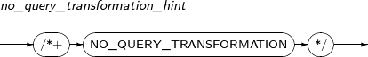
NO_MERGE
NO_MERGE는 질의 변형기(Query Transformer)가 특정 뷰에 대해 뷰 병합을 하지 않도록 지시하는 힌트이다. Tibero에서는 뷰 병합이 디폴트로 수행되며, 뷰가 병합이 가능할 경우 상위의 질의 블록과 결합해 하나의 질의 블록을 형성한다. NO_MERGE 힌트를 사용하면 이렇게 디폴트로 수행되는 뷰의 병합을 막을 수 있다.
-
문법
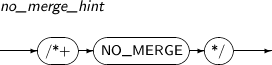 -
예제
다음은 NO_MERGE 힌트를 사용하는 예이다.
SELECT * FROM T1, (SELECT /*+ NO_MERGE */ * FROM T2, T3 WHERE T2.A = T3.B) V WHERE T1.C = V.D
위의 예에서처럼 NO_MERGE 힌트는 병합되기를 원하지 않는 뷰의 질의 블록에 명시한다. 힌트가 없었다면 뷰가 병합되어 질의 최적화기에서 테이블 T1, T2, T3에 대한 조인 순서와 조인 방법을 고려하게 되지만, 위와 같이 힌트가 있을 경우는 뷰가 병합되지 못하기 때문에 T2와 T3가 먼저 조인되고, 그 이후에 T1이 조인된다.
UNNEST
UNNEST는 질의 변형기가 특정 부질의(Subquery)를 언네스팅하도록 지시하는 힌트이다. Tibero는 부질의 언네스팅을 디폴트로 수행하지만, 특정 쿼리만 언네스팅을 하려면 초기화 파라미터에서 언네스팅을 해제하면 된다. 그러면 UNNEST 힌트를 이용할 수 있다. UNNEST 힌트는 부질의 블록에 명시한다.
-
문법
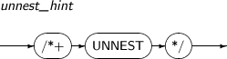
NO_UNNEST
NO_UNNEST는 질의 변형기가 특정 부질의에 대해 언네스팅을 수행하지 않도록 지시하는 힌트이다. Tibero는 부질의 언네스팅을 디폴트로 수행하며 언네스팅이 가능한 경우 부질의를 조인으로 변환한다. 이때 NO_UNNEST 힌트를 사용해서 언네스팅을 막을 수 있다. NO_UNNEST 힌트는 부질의 블록에 명시한다.
-
문법
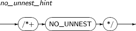
NO_JOIN_ELIMINATION
NO_JOIN_ELIMINATION는 질의 변형기(Query Transformer)가 불필요한 조인을 찾아서 제거하지 않도록 지시하는 힌트이다. Tibero에서는 디폴트로 질의 결과를 생성하는데 필요하지 않은 조인들을 찾아서 제거하며, NO_JOIN_ELIMINATION 힌트를 사용하면 이를 막을 수 있다.
-
문법
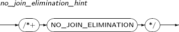 -
예제
다음은 NO_JOIN_ELIMINATION 힌트를 사용하는 예이다.
SELECT /*+ NO_JOIN_ELIMINATION */ T2.FK, T2.A FROM T1, T2 WHERE T2.FK = T1.PK
위의 예처럼 T2의 컬럼을 요청하였을 때 T1과 T2 사이에 참조 관계가 정의되어 있다면 T1과 조인을 하지 않아도 조건절에 주어진 T2.FK = T1.PK는 T2.FK가 NULL이 아닌 한 참임을 알 수 있다. 질의 변환기는 이처럼 필요하지 않은 조인을 찾아 제거하는데 NO_JOIN_ELIMINATION 힌트를 적용하면 이러한 기능을 막을 수 있다.
STAR_TRANSFORMATION
STAR_TRANSFORMATION는 스타 변형 (STAR TRANSFORMATION)이 가능할 경우 변형을 시도하도록 지시하는 힌트이다. Tibero에서는 디폴트로 스타 변형을 하지않도록 하는데, STAR_TRANSFORMATION 힌트를 사용하면 이를 사용할 수 있다.
-
문법
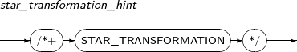 -
예제
다음은 STAR_TRANSFORMATION 힌트를 사용하는 예이다.
SELECT /*+ STAR_TRANSFORMATION */ s.* FROM S, T1, T2 WHERE S.C1 = T1.C1 AND S.C2 = T2.C2스타 스키마(STAR SCHEMA)를 사용하는 데이터베이스 환경에서 위의 예처럼 쿼리를 쓰면 스타 변형을 할 수 있다. 이 변형은 기존 INDEX JOIN으로만 풀린 플랜에서 BITMAP KEY ITERATION을 포함한 플랜으로 풀리게 하여 더 효율적인 결과를 얻게 한다.
최적화 방법이 적용된 힌트를 사용하여 처리 과정과 결과 표시를 최적화할 수 있다. 만약 최적화 방법이 적용된 힌트가 사용된 질의가 있다면 해당 질의에 대해서는 통계 정보와 초기화 파라미터의 최적화 방법(OPTIMIZER MODE)의 값이 없는 것처럼 처리된다.
ALL_ROWS
ALL_ROWS는 최소한의 리소스를 사용하여 전체 결과에 대한 처리량이 가장 많도록 처리과정의 최적화 방법을 선택하는 힌트이다.
-
문법
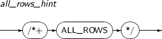
FIRST_ROWS
FIRST_ROWS는 첫 로우부터 파라미터로 입력된 번호의 로우까지 가장 빠르게 보여줄 수 있도록 결과 표시의 최적화 방법을 선택하는 힌트이다.
-
문법
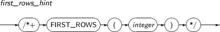
접근 방법이 적용된 힌트는 질의 최적화기가 특정 접근 방법의 사용이 가능한 경우, 그 방법을 사용하도록 명시한다. 만일 힌트에서 명시한 방법을 사용할 수 없는 경우에는 질의 최적화기는 그 힌트를 무시한다.
힌트에 명시하는 테이블명은 SQL 문에서 사용하는 이름과 동일해야 한다. 즉, 테이블 이름에 대한 별칭을 사용하였다면, 테이블 이름 대신에 별칭을 사용하여야 한다. SQL 문에서 테이블 이름에 스키마 이름을 포함하여 명시하였더라도 힌트에서는 테이블 이름만을 명시하여야 한다.
FULL
FULL은 명시한 테이블을 스캔할 때, 전체 테이블을 스캔하도록 지시하는 힌트이다. WHERE 절에 명시된 조건식에 맞는 인덱스가 있더라도 전체 테이블 스캔을 사용한다.
-
문법
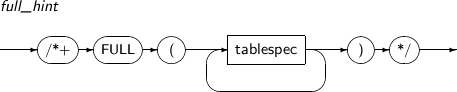
INDEX
INDEX는 명시한 테이블을 스캔할 때, 명시한 인덱스를 사용하여 인덱스 스캔을 하도록 지시하는 힌트이다.
-
문법
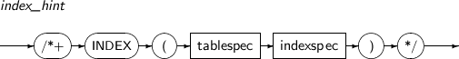
NO_INDEX
NO_INDEX는 명시한 테이블을 스캔할 때, 명시한 인덱스를 사용하는 인덱스 스캔을 하지 않도록 지시하는 힌트이다. 만일 NO_INDEX 힌트와 INDEX 또는 INDEX_ASC, INDEX_DESC 힌트가 동일한 인덱스를 명시한다면 질의 최적화기는 이 두 힌트를 모두 무시한다.
-
문법
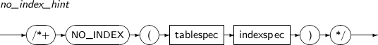
INDEX_ASC
INDEX_ASC는 명시한 테이블을 스캔할 때, 명시한 인덱스를 사용하여 인덱스 스캔을 하도록 지시하는 힌트이다. 만일 인덱스 범위 스캔을 사용하는 경우에는 인덱스를 오름차순으로 스캔하도록 한다. 현재 Tibero의 인덱스 스캔의 기본 동작이 오름차순이기 때문에 INDEX_ASC는 INDEX와 동일한 작업을 수행한다. 분할된 인덱스의 경우 분할된 각 영역 내에서 오름차순으로 스캔한다.
-
문법
INDEX_DESC
INDEX_DESC는 명시한 테이블을 스캔할 때, 명시한 인덱스를 사용하여 인덱스 스캔을 하도록 지시하는 힌트이다. 만일 인덱스 범위 스캔을 사용하는 경우에는 인덱스를 내림차순으로 스캔하도록 한다. 분할된 인덱스의 경우 분할된 각 영역 내에서 내림차순으로 스캔한다.
-
문법
INDEX_FFS
INDEX_FFS는 명시한 테이블에 대해 명시한 인덱스를 사용하여 빠른 전체 인덱스 스캔(Fast Full Index Scan)을 사용하도록 지시하는 힌트이다.
-
문법
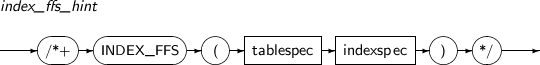
NO_INDEX_FFS
NO_INDEX_FFS는 명시한 테이블에 대해 명시한 인덱스를 사용하는 빠른 전체 인덱스 스캔을 사용하지 않도록 지시하는 힌트이다.
-
문법
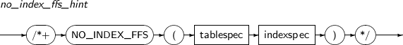
INDEX_RS
INDEX_RS는 명시한 테이블에 대해 명시한 인덱스를 사용하여 범위 인덱스 스캔(Range Index Scan)을 사용하도록 지시하는 힌트이다.
-
문법
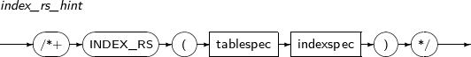
NO_INDEX_RS
NO_INDEX_RS는 명시한 테이블에 대해 명시한 인덱스를 사용하는 범위 인덱스 스캔을 사용하지 않도록 지시하는 힌트이다.
-
문법
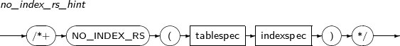
INDEX_SS
INDEX_SS는 명시한 테이블에 대해 명시한 인덱스를 사용하여 인덱스 스킵 스캔(Index Skip Scan)을 사용하도록 지시하는 힌트이다.
-
문법
NO_INDEX_SS
NO_INDEX_SS는 명시한 테이블에 대해 명시한 인덱스를 사용하는 인덱스 스킵 스캔을 사용하지 않도록 지시하는 힌트이다.
-
문법
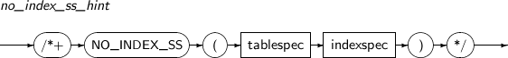
INDEX_JOIN
INDEX_JOIN은 명시한 테이블에 대해 명시한 두 개 이상의 힌트를 사용하여, 테이블을 스캔할 때 자체 조인(Self Join)을 사용하도록 지시하는 힌트이다.
-
문법
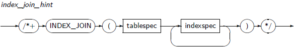
LEADING, ORDERED는 조인 순서를 결정하는 힌트이다. LEADING 힌트가 ORDERED보다 질의 최적화기를 선택할 수 있는 폭이 넓어서 LEADING을 사용하는 것이 좋다.
LEADING
LEADING은 조인에서 먼저 조인되어야 할 테이블의 집합을 명시하는 힌트이다. LEADING 힌트가 먼저 조인될 수 없는 테이블을 포함하는 경우 무시된다. 또, LEADING 힌트끼리 충돌하는 경우에는 LEADING, ORDERED 힌트가 모두 무시된다. 만일 ORDERED 힌트가 사용되는 경우에는 LEADING 힌트는 모두 무시된다.
-
문법
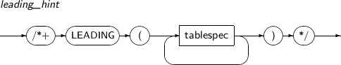
ORDERED
ORDERED는 테이블을 FROM 절에 명시된 순서대로 조인하도록 지시하는 힌트이다. 질의 최적화기는 조인의 결과 집합의 크기에 대한 정보를 추가로 알고 있다. 사용자가 그 정보를 통해 질의 최적화기의 조인 순서를 명확히 알고 있을 경우에만 ORDERED 힌트를 사용하는 것이 좋다.
-
문법
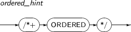
조인 방법이 적용된 힌트는 한 테이블에 대해서만 조인 방법을 지시한다. 조인 방법이 적용된 힌트는 명시한 테이블이 조인의 내부 테이블로 사용될 경우에만 참조된다. 명시한 테이블을 외부 테이블로 사용하는 경우에는 조인 방법이 적용된 힌트는 무시된다.
USE_NL
USE_NL은 명시한 테이블을 다른 테이블과 조인하는 경우 중첩 루프 조인을 사용하도록 지시하는 힌트이다.
-
문법
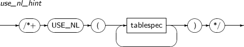
NO_USE_NL
NO_USE_NL은 명시한 테이블을 다른 테이블과 조인하는 경우 중첩 루프 조인을 사용하지 않도록 지시하는 힌트이다. 하지만, 특수한 경우에는 이 힌트가 주어졌더라도 질의 최적화기에서 중첩 루프 조인을 사용하는 플랜을 생성할 수 있다.
-
문법
USE_NL_WITH_INDEX
USE_NL_WITH_INDEX는 명시한 테이블을 다른 테이블과 조인하는 경우 중첩 루프 조인을 사용하도록 지시하는 힌트이다. 이때 명시한 테이블에 대한 접근은 명시한 인덱스와 두 테이블에 대한 조인 조건을 이용하여 이루어져야 한다. 만일 인덱스를 사용할 수 없는 경우이면 힌트는 무시된다.
-
문법
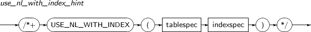
USE_MERGE
USE_MERGE는 명시한 테이블을 다른 테이블과 조인하는 경우 합병 조인을 사용하도록 지시하는 힌트이다.
-
문법
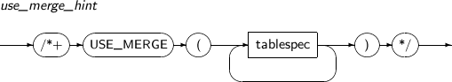
NO_USE_MERGE
NO_USE_MERGE는 명시한 테이블을 다른 테이블과 조인하는 경우 합병 조인을 사용하지 않도록 지시하는 힌트이다.
-
문법
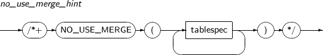
USE_HASH
USE_HASH는 명시한 테이블을 다른 테이블과 조인하는 경우 해시 조인을 사용하도록 지시하는 힌트이다.
-
문법
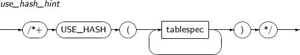
NO_USE_HASH
NO_USE_HASH는 명시한 테이블을 다른 테이블과 조인하는 경우 해시 조인을 사용하지 않도록 지시하는 힌트이다.
-
문법
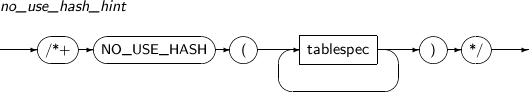
HASH_SJ
HASH_SJ는 부질의를 언네스팅할 때 해시방법을 이용한 세미조인으로 하도록 지시하는 힌트이다.
-
문법
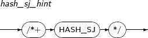
HASH_AJ
HASH_AJ는 부질의를 언네스팅할 때 해시방법을 이용한 안티조인으로 하도록 지시하는 힌트이다.
-
문법
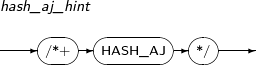
MERGE_SJ
MERGE_SJ는 부질의를 언네스팅할 때 머지방법을 이용한 세미조인으로 하도록 지시하는 힌트이다.
-
문법
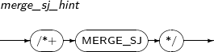
MERGE_AJ
MERGE_AJ는 부질의를 언네스팅할 때 머지방법을 이용한 안티조인으로 하도록 지시하는 힌트이다.
-
문법
NL_SJ
NL_SJ는 부질의를 언네스팅할 때 네스티드 루프 방법을 이용한 세미조인으로 하도록 지시하는 힌트이다.
-
문법
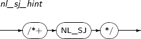
NL_AJ
NL_AJ는 부질의를 언네스팅할 때 네스티드 루프 방법을 이용한 안티조인으로 하도록 지시하는 힌트이다.
-
문법
SWAP_JOIN_INPUTS
SWAP_JOIN_INPUTS는 해시 조인을 수행하는 경우 명시한 테이블을 사용하여 해시 테이블을 빌드하도록 지시하는 힌트이다.
-
문법
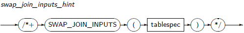
NO_SWAP_JOIN_INPUTS
NO_SWAP_JOIN_INPUTS는 해시 조인을 수행하는 경우 조인 순서가 바뀌는 경우, 명시한 테이블이 해시 테이블로 빌드되지 않도록 지시하는 힌트이다.
-
문법
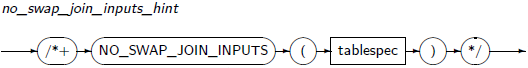
PARALLEL
PARALLEL은 지정한 개수의 스레드를 사용해 질의의 수행을 병렬로 진행하도록 지시하는 힌트이다.
-
문법
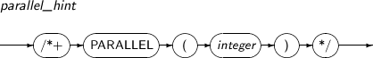
NO_PARALLEL
NO_PARALLEL은 질의의 수행을 병렬로 진행하지 않도록 지시하는 힌트이다.
-
문법
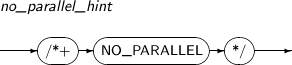
PQ_DISTRIBUTE
PQ_DISTRIBUTE는 조인을 포함한 질의의 병렬 처리에서 조인될 로우의 분산 방법을 지시하는 힌트이다. 분산 방법으로는 HASH-HASH, BROADCAST-NONE, NONE-BROADCAST, NONE-NONE이 있으며 특정한 분산 방법을 선택함으로써 병렬 처리에서 조인의 성능을 향상시킬 수 있다.
-
문법
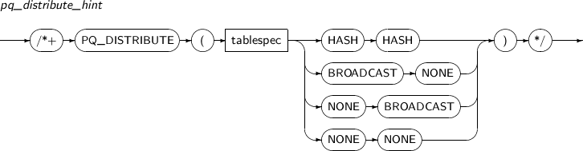다음은 각각의 속성에 대한 설명이다.
속성 설명 NONE NONE 힌트가 없을 때와 같은 플랜이 생성된다. BROADCAST NONE 조인의 왼쪽은 BROADCAST, 오른쪽은 PE BLOCK ITERATOR의 분산 방법으로 동작한다. NONE BROADCAST 조인의 왼쪽은 PE BLOCK ITERATOR, 오른쪽은 BROADCAST의 분산 방법으로 동작한다. HASH HASH 조인의 왼쪽, 오른쪽 모두 HASH의 분산 방법으로 동작한다.
REWRITE
REWRITE는 해당 질의 블록에서 비용의 비교 없이 실체화 뷰를 사용하여 질의의 다시 쓰기를 하도록 지시하는 힌트이다. 따라서 최종으로는 REWRITE 힌트가 사용된 질의 블록만 다시 쓰기를 한 결과와 모든 블록에서 다시 쓰기를 한 결과의 비용을 비교해서 더 좋은 쪽을 질의 최적화기가 선택하게 된다.
실체화 뷰의 목록이 명시된 경우에는 목록에 있는 실체화 뷰만 사용하여 질의의 다시 쓰기를 시도한다.
-
문법

NO_REWRITE
NO_REWRITE는 해당 질의 블록에서는 질의의 다시 쓰기를 하지 않도록 지시하는 힌트이다.
-
문법
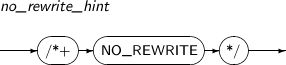
MATERIALIZE
MATERIALIZE는 With 절 안에 있는 Subquery를 실체화 뷰(Materialized View)로 만들도록 지시하는 힌트이다.
-
문법

INLINE
INLINE은 With 절 안에 있는 Subquery를 실체화 뷰(Materialized View)로 만들지 않도록 지시하는 힌트이다.
-
문법
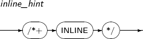
APPEND
APPEND는 DML 문장에서 직접 데이터 파일에 추가하는 삽입 방법 즉 Direct-Path 방식을 수행하도록 지시하는 힌트이다.
Direct-Path 방식은 일반적인 삽입 방법과 달리 항상 새로운 데이터 블록을 할당받아서 데이터 삽입을 수행하며, 버퍼 캐시를 이용하지 않고 직접 데이터 파일을 추가하기 때문에 성능 향상에 많은 이점이 있다.
-
문법
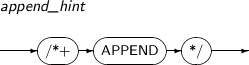
APPEND_VALUES
APPEND_VALUES는 VALUES절을 사용하는 INSERT 문에서 직접 데이터 파일에 추가하는 삽입 방법 즉 Direct-Path 방식을 수행하도록 지시하는 힌트이다.
Direct-Path 방식은 일반적인 삽입 방법과 달리 항상 새로운 데이터 블록을 할당받아서 데이터 삽입을 수행하며, 버퍼 캐시를 이용하지 않고 직접 데이터 파일을 추가하므로 일괄 삽입에 사용하면 성능 향상에 많은 이점이 있다.
-
문법
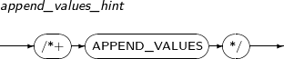
NOAPPEND
NOAPPEND는 DML 문장에서 Direct-Path 방식을 수행하지 않도록 지시하는 힌트이다.
-
문법
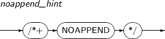
IGNORE_ROW_ON_DUPKEY_INDEX
single table INSERT문에서만 사용이 가능하다. 유일키 제약조건을 위배하면 에러를 발생시키지 않고 삽입하던 로우를 롤백하고 다음 로우부터 삽입을 재개한다.
인덱스를 명시하지 않은 경우, 여러 개의 인덱스를 명시한 경우, 명시된 인덱스가 UNIQUE 속성을 갖지 않는 경우에는 힌트이지만 에러를 발생시킨다. 이 힌트를 명시하면 APPEND, PARALLEL 힌트는 무시된다.
-
문법
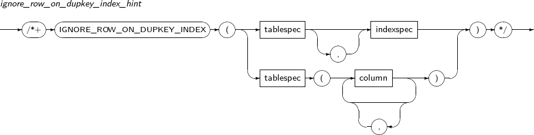
CARD
CARD는 쿼리 최적화 할 때에 지정 테이블의 Cardinality를 주어진 값을 이용하여 계산하도록 지시하는 힌트이다.
-
문법
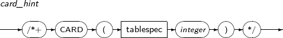
MONITOR
MONITOR는 쿼리를 수행할 때 쿼리 수행 정보를 모으도록 지시하는 힌트이다.
-
문법

NO_MONITOR
NO_MONITOR는 쿼리를 수행할 때 쿼리 수행 정보를 모으지 않도록 지시하는 힌트이다.
-
문법
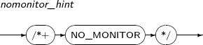
USE_CONCAT
USE_CONCAT은 OR 조건문을 UNION ALL로 쪼개어 OR 양쪽에 대하여 별도의 플랜 노드를 만들어 합치는 OR expansion된 플랜이 만들어지도록 강제하는 힌트이다.
-
문법
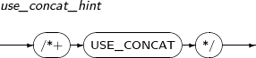
NO_EXPAND
NO_EXPAND는 OR expansion을 막음으로써 OR 조건문이 필터로 보존된 플랜을 만들도록 강제하는 힌트이다.
-
문법
RESULT_CACHE
Query 결과를 Cache에 저장하기 위한 Result Cache를 사용하도록 지시하는 힌트이다. RESULT_CACHE_MODE 초기 파라미터 값이 "MANUAL"일 때만 유효하며, "FORCE"일 때는 힌트의 존재 여부와 관계없이 모든 Query 결과를 Result Cache에 저장한다.
-
문법
NO_SUBQUERY_CACHE
NO_SUBQUERY_CACHE는 특정 질의 블록에 대해 부질의 결과를 캐싱하지 않도록 강제하는 힌트이다. Tibero는 가능하다면 부질의 결과 캐싱 기능을 사용하는 실행 계획을 수립한다. 이때 이 힌트를 사용하여 특정 질의 블록에 대해 부질의 결과 캐싱을 강제로 막을 수 있다. NO_SUBQUERY_CACHE 힌트는 대상 질의 블록에 명시하며, 부질의의 실행 계획 최상위 노드로서 CACHE가 생기지 않는다.
-
문법
-
예제
다음은 NO_SUBQUERY_CACHE 힌트를 사용하는 예이다.
SELECT * FROM T1 WHERE EXISTS (SELECT /*+ NO_SUBQUERY_CACHE */ * FROM T2 WHERE T1.A = T2.A)
위에 예처럼 EXISTS절 질의 블록에 힌트를 명시할 경우, 해당 블록에 대해 부질의 결과를 캐싱하는 기능을 사용하지 않도록 강제한다.
OPT_PARAM
쿼리가 수행되는 도중 초기화 환경변수를 바꿔서 수행하는 힌트이다. 예를 들어 수행되는 쿼리에 /*+OPT_PARAM(OPTIMIZER_MODE FIRST_ROWS_1)*/ 이라는 힌트를 준다면, 해당 쿼리가 수행되는 동안에 한해서 OPTIMIZER_MODE가 FIRST_ROWS_1로 설정되어 수행된다.
-
문법
데이터베이스는 여러 객체로 구성된다. 각 객체는 '데이터베이스 > 사용자 > 스키마 > 스키마 객체'의 순으로 포함 관계를 갖는다. 하나의 데이터베이스는 여러 사용자가 공유하고 있다. 또한 사용자 중에는 데이터베이스를 관리하기 위해 특별한 권한을 부여 받고 있는 DBA가 있다.
스키마는 사용자가 소유한 객체의 모임(Collection)이다. Tibero에서는 한 사용자가 하나의 스키마만을 정의할 수 있고, 스키마의 이름은 항상 사용자의 이름과 동일하다. 이러한 스키마에 포함된 객체를 스키마 객체라 한다. SQL 표준에서 정의한 스키마 객체 외에, 데이터베이스 시스템에 따라 추가적인 스키마 객체를 제공하고 있다.
Tibero에서 제공하는 스키마 객체는 다음과 같다.
-
테이블(Table)
-
인덱스(Index)
-
뷰(View)
-
시퀀스(Sequence)
-
동의어(Synonym)
테이블은 관계형 데이터베이스의 기본 저장 단위이다. 다른 모든 스키마 객체는 테이블을 중심으로 정의된다. 테이블은 2차원 행렬(Matrix)의 형태를 갖는다. 테이블은 하나 이상의 컬럼으로 구성되며 각 컬럼은 고유의 데이터 타입을 갖는다. 하나의 테이블은 0개 이상의 로우를 포함한다. 각 로우는 각 컬럼에 해당하는 값을 갖는다.
참고
테이블을 생성하고 변경, 제거하기 위한 SQL 문장은 각각 CREATE TABLE, ALTER TABLE, DROP TABLE이다. 이러한 문장은 DDL에 포함되며, 자세한 설명은 “제7장 데이터 정의어”를 참고한다.
다음은 회사 직원의 정보를 저장하고 있는 EMP 테이블의 예이다.
[예 2.1] EMP 테이블
EMPNO ENAME ADDR SALARY DEPTNO
---------- ------------ ---------------- ---------- ----------
35 John Houston 30000 5
54 Alicia Castle 25000 4
27 Ramesh Humble 38000 5
69 James Houston 35000 4
위의 테이블은 'EMPNO, ENAME, ADDR, SALARY, DEPTNO'의 다섯 개의 컬럼으로 구성되며, 네 개의 로우를 포함하고 있다. 테이블을 구성하는 컬럼 정보는 거의 변경되지 않으나, 테이블에 포함된 로우의 개수는 수시로 변경될 수 있다.
컬럼의 데이터 타입 중에는 문자형과 같이 최대 길이를 미리 정해야 하는 것도 있고, NUMBER 타입과 같이 정밀도와 스케일을 정해야 하는 것도 있다. 일부 컬럼에 대해서는 기본값을 선언할 수도 있다. 데이터 타입에 대해서는 “2.1. 데이터 타입”에서 자세하게 설명한다.
테이블 전체 또는 일부 컬럼에 무결성 제약조건(Integrity Constraints)을 선언할 수 있다. 무결성 제약 조건은 테이블에 어떠한 로우가 삽입되든 항상 만족되어야 한다. 예를 들어 테이블 EMP의 한 컬럼 SALARY에 대하여 다음과 같은 조건을 선언할 수 있다.
SALARY >= 0
직원의 연봉이 0보다 작을 수 없으므로, 이러한 조건을 사용해 잘못된 데이터의 입력을 미리 막을 수 있다. 무결성 제약조건을 표현하기 위한 조건식(Condition Expression)은 “3.4. 조건식”에서 설명한다.
하나의 테이블에 무결성 제약조건을 선언할 수도 있고, 두 개의 테이블에 참조 무결성(Referential Integrity) 제약조건을 선언할 수도 있다.
다음은 회사의 부서 정보를 저장하는 DEPT 테이블의 예이다.
[예 2.2] DEPT 테이블
DEPTNO DNAME LOC
---------- ------------ ----------------
1 Accounting Houston
4 Research Spring
5 Sales Houston
회사의 모든 직원이 하나의 특정 부서에 반드시 소속되어야 한다면, [예 2.1]의 테이블 EMP의 컬럼 DEPTNO의 값은 반드시 [예 2.2]의 테이블 DEPT의 컬럼 DEPTNO에 존재하는 값이어야 한다.
참고
무결성 제약조건에 대한 자세한 내용은 "Tibero 관리자 안내서"를 참고한다.
인덱스는 테이블과 별도의 저장공간을 이용하여 그 테이블의 특정 컬럼을 빠르게 검색 할 수 있도록 해주는 데이터 구조이다. 테이블의 소유자는 어떤 컬럼에 대해 하나 이상의 인덱스를 생성할 수 있다.
참고
인덱스를 생성하고 변경, 제거하기 위한 SQL 문장은 각각 CREATE INDEX, ALTER INDEX, DROP INDEX이다. 이러한 문장은 DDL에 포함되며, 자세한 설명은 “제7장 데이터 정의어”를 참고한다.
다음은 인덱스에 대한 설명이다.
-
자동 인덱싱
Tibero에서는 모든 테이블의 기본 키(Primary Key) 컬럼에 대해 자동으로 인덱스를 생성한다. 기본 키 컬럼이란 테이블 내의 특정 로우를 유일하게 식별할 수 있는 값을 갖는 컬럼을 의미한다. 하나의 테이블 내에서 어떤 로우도 다른 로우와 동일한 기본 키 컬럼 값을 가질 수 없다. 위의 [예 2.1]와 [예 2.2]에서는 각각 컬럼 EMPNO와 DEPTNO가 기본 키 컬럼이 될 수 있다.
-
컬럼의 중복 허용
인덱스는 컬럼 값의 중복 유무에 관계 없이 생성할 수 있다. 예를 들어 테이블 DEPT의 컬럼 DEPTNO와 같이 중복이 없는 컬럼이나 테이블 EMP의 컬럼 DEPTNO와 같이 중복이 있는 컬럼에 대해서도 인덱스를 생성할 수 있다.
-
복수 컬럼 허용
인덱스는 하나의 컬럼뿐만 아니라 둘 이상의 컬럼 값을 하나로 접합하여 생성할 수도 있다. 예를 들어 테이블 EMP의 컬럼 ENAME과 ADDR 값을 합쳐서 인덱스를 만들 수 있다. 이러한 인덱스는 둘 이상의 컬럼이 동시에 검색 대상이 될 확률이 높은 경우에 유용하다.
-
인덱스의 적용
사용자가 인덱스를 생성하더라도 바로 사용되지는 않는다. 인덱스가 생성되면 SQL 질의를 수행할 때, 질의 최적화기가 인덱스를 사용할 때와 사용하지 않을 때의 실행 효율성을 비교하고, 더 효율적인 방향으로 실제 질의를 실행한다. 따라서, 질의 대상 테이블에 대해서 생성된 인덱스를 이용할 것인지, 어떤 컬럼에 대해서 생성된 인덱스를 이용할 것인지는 데이터베이스 시스템에 의하여 자동적으로 결정된다.
-
인덱스의 관리
인덱스의 관리도 데이터베이스 시스템에서 자동적으로 이루어진다. 인덱스가 생성된 후에 테이블에 하나의 로우가 삽입되거나 갱신, 삭제되면, 그 테이블에 대하여 생성된 모든 인덱스에서 그 로우에 대한 삽입, 갱신, 삭제가 이루어진다.
-
인덱스의 제거
인덱스가 더 이상 필요하지 않으면 언제라도 그 인덱스를 제거할 수 있다. 인덱스를 너무 많이 생성해 놓으면 테이블에 대한 갱신이 이루어질 때마다 인덱스에도 함께 반영해 주어야 하므로 성능 저하의 원인이 될 수 있다. 따라서, 불필요한 인덱스는 제거하는 것이 바람직하다.
뷰는 SQL 문장에 이름을 붙인 것으로, 빈번히 수행되는 질의의 결과를 테이블 형태로 이용할 수 있도록 정의한 것이다. 뷰는 테이블 또는 다른 뷰를 이용하여 정의할 수 있으며, SQL 문장 내에서 일반 테이블과 동일하게 이용할 수 있다. 뷰가 정의된 테이블을 기반 테이블(base table)이라 한다.
뷰를 정의하는 이유는, 하나의 테이블을 여러 사용자가 함께 접근할 수 있지만 사용자에 따라 테이블 내용의 일부를 숨김으로써 정보 보안을 유지하고자 하는 것이다.
참고
뷰를 생성하고 제거하기 위한 SQL 문장은 CREATE VIEW, DROP VIEW이다. 이러한 문장은 DDL에 포함되며, 자세한 설명은 “제7장 데이터 정의어”를 참고한다.
다음은 뷰에 대한 설명이다.
-
뷰 병합
데이터베이스 시스템 내에서 뷰는 질의 문장을 문자열 형태로 관리한다. 만약 뷰를 포함한 SQL 문장이 입력되면, 데이터베이스 시스템은 그 문장을 뷰를 포함하지 않는 기반 테이블에 대한 SQL 문장으로 변환한다. 이러한 과정을 뷰 병합이라고 한다.
-
뷰의 활용과 권한
뷰가 이용되는 경우는 위에서와 같이 빈번한 질의를 단순화하고자 하는 경우 이외에, 뷰를 정의한 기반 테이블의 일부만을 드러내고자 하는 경우에도 사용된다. 예를 들어 테이블 EMP의 내용 중에서 컬럼 SALARY의 내용을 관리직이 아닌 일반 직원에게 드러내고 싶지 않은 경우에, 일반 직원이 테이블 EMP를 직접 접근하지 못하고 뷰를 통해서만 접근하도록 할 수 있다.
이러한 경우 스키마 객체를 접근할 수 있는 권한(Authority)과 연관이 된다. 즉, 뷰를 정의한 사용자가 일반 직원에게 그 뷰를 접근할 권한만을 부여하고 뷰가 정의된 기반 테이블 EMP를 접근할 권한을 부여하지 않으면, 일반 직원에게 테이블 EMP 내의 데이터 중에서 그 뷰에 의하여 볼 수 있는 일부만을 드러내는 것이다.
시퀀스는 유일한 연속적인 값을 생성해 낼 수 있는 스키마 객체이다. 이 값은 보통 기본 키 또는 유일 키에 값을 채워 넣을 때 사용된다. 항상 시퀀스의 이름에는 의사 컬럼을 붙여서 사용한다.
SQL 문에서는 다음의 의사 컬럼을 통해 시퀀스의 값을 읽어 들인다.
다음은 의사 컬럼과 함께 시퀀스를 사용하는 예이다.
seq1.currval seq2.nextval
다음은 위치에 따른 시퀀스 의사 컬럼의 사용 여부에 대해 설명한다.
| 사용 여부 | 위치 |
|---|---|
| 사용 가능 |
부질의 또는 뷰의 SELECT 리스트에서는 사용할 수 없다.
|
| 사용 불가능 |
|
시퀀스를 생성할 때 초기 값과 증감치가 결정된다. NEXTVAL 의사 컬럼을 통해 최초로 시퀀스에 접근하면, 시퀀스는 초기 값을 반환한다. 이후 NEXTVAL을 사용할 때마다 시퀀스의 값은 증감치 만큼 증가하고, 새로 증가된 값을 반환한다. CURRVAL 의사 컬럼은 항상 시퀀스의 현재 값을 반환하며, 이것은 가장 마지막에 사용된 NEXTVAL이 반환한 값과 같다.
CURRVAL 의사 컬럼을 사용하기 전에 적어도 한 번 이상은 시퀀스에 NEXTVAL을 사용해서 초기화를 시켜야 한다. SQL 문장에 사용된 NEXTVAL 의사 컬럼은 SQL 문장이 처리하는 행의 단위별로 시퀀스의 값을 증가시킨다.
시퀀스의 값을 증가시키는 행은 다음과 같다.
-
최상위 레벨의 SELECT 문이 출력하는 행
-
INSERT ... SELECT 문에서 SELECT 문이 선택하는 행
-
CREATE TABLE ... AS SELECT 문에서 SELECT 문이 선택하는 행
-
UPDATE 문이 갱신하는 각각의 행
-
VALUES 절을 포함한 INSERT 문이 삽입하는 행
한 행에 두 번 이상의 NEXTVAL이 나왔을 경우 시퀀스 값은 처음 한 번만 증가되며, 증가된 그 값이 다음 위치에 동일하게 사용된다.
NEXTVAL과 CURRVAL이 한 행에 동시에 나왔을 경우 시퀀스 값은 역시 한 번만 증가되며, NEXTVAL에 사용된 값이 CURRVAL에 동일하게 사용된다.
동의어는 특정 스키마 객체에 정의하는 일종의 별칭(Alias)이다. 대개 긴 이름을 갖는 스키마 객체에 대하여 짧은 이름의 동의어를 정의하거나, 특별한 용도의 스키마 객체에 대하여 동의어를 정의한다.
다음은 동의어에 대한 설명이다.
-
동의어와 뷰의 차이점
동의어는 긴 이름 대신 사용한다는 점에서 뷰와 같다. 그러나 뷰는 하나의 완전한 SQL 문장에 대한 것이고, 동의어는 하나의 스키마 객체에 한정된다는 차이점이 있다. 또한 동의어는 뷰와 다르게 접근 권한이 별도로 설정되지 않는다. 만약 특정 스키마 객체에 대한 접근 권한이 있다면 그에 대한 동의어에 대해서도 접근 권한을 갖게 된다.
-
동의어의 사용 설정
동의어는 기본적으로 동의어를 정의한 사용자만이 사용할 수 있으나, 다른 모든 사용자도 함께 사용하도록 공용으로 정의할 수도 있다. 이렇게 모든 사용자가 사용할 수 있는 동의어를 공유 동의어라고 부른다. Tibero에서는 DBA와 일반 사용자가 데이터 사전(Data Dictionary)의 정보를 쉽게 접근할 수 있도록, 여러 가지 시스템 뷰를 정의하고 각각에 대한 동의어를 정의하고 있다.
참고
동의어를 생성하고 삭제하기 위한 SQL 문장은 CREATE SYNONYM과 DROP SYNONYM이다. 동의어를 변경하기 위한 별도의 SQL 문장은 없다. 이러한 문장은 DDL에 포함되며, 자세한 설명은 “제7장 데이터 정의어”를 참고한다.
스키마 객체에 따라 사용자가 각각의 부분 또는 전체에 이름을 부여할 수 있거나 꼭 부여해야만 하는 경우가 있다. 테이블, 테이블의 컬럼, 인덱스, 무결성 제약조건, 테이블 파티션, 테이블 서브 파티션, 인덱스 파티션, 인덱스 서브파티션, 패키지와 패키지 내의 함수와 프러시저 등이 이에 해당한다.
SQL 문장에서 스키마 객체의 이름을 명시할 때는 '따옴표 있는 식별자' 또는 '따옴표 없는 식별자'를 사용한다.
-
따옴표 있는 식별자는 큰따옴표(" ")로 시작해서 큰따옴표로 끝난다.
-
따옴표 없는 식별자는 큰따옴표로 열고 닫지 않는다.
스키마 객체에 이름을 부여할 때는 이 두 개 중 어떤 것을 쓰더라도 상관없다. 따옴표 없는 식별자는 대소문자를 구별하지 않으며, 모두 대문자로 간주되어 처리된다. 따옴표 있는 식별자는 대소문자를 구분한다.
예를 들어 다음의 경우는 모두 서로 다른 식별자이다.
department "department" "Department"
다음의 경우는 모두 같은 식별자이다.
department DEPARTMENT "DEPARTMENT"
-
길이가 30byte를 넘어서는 안 된다.
-
예약어는 따옴표 없는 식별자가 될 수 없다. 따옴표를 적용하여 예약어를 식별자로 만들 수 있으나, 권장하지는 않는다. 예약어는 “Appendix A. 예약어”를 참고한다.
-
따옴표 없는 식별자는 알파벳, 한글, 숫자, 언더바( _ ), $, #만 사용할 수 있다. 다만, 숫자, '$', '#'는 첫 글자로 올 수 없다.
-
따옴표 있는 식별자는 공백을 포함한 어떤 문자라도 쓸 수 있다. 다만 큰따옴표(" ")는 사용할 수 없다.
-
하나의 네임스페이스 안에서 서로 다른 두 객체가 동일한 이름을 가질 수 없다.
구분 네임스페이스 종류 스키마 객체 하나의 네임스페이스 테이블, 뷰, 실체화 뷰, 시퀀스, 동의어, 패키지, 패키지에 포함되지 않은 함수 및 프러시저 독립적인 네임스페이스 인덱스, 트리거, 대용량 객체형 데이터 타입
(서로 다른 스키마의 네임스페이스는 공유되지 않는다. 그러므로 서로 다른 스키마에 있는 두 개의 테이블은 같은 이름을 가질 수 있다.)
일반 객체 독립적인 네임스페이스 사용자 역할, 공유 동의어, 테이블 스페이스 -
하나의 테이블 내의 서로 다른 컬럼은 동일한 이름을 가질 수 없다. 서로 다른 테이블에 속해 있는 컬럼은 동일한 이름을 가질 수 있다.
-
한 패키지 내의 서로 다른 프러시저나 함수는 인자의 개수나 데이터 타입이 다른 경우에 한해서 동일한 이름을 가질 수 있다.
SQL 문장에서 스키마 객체와 객체의 구성 요소를 명시하는 방법을 설명한다.
스키마 객체를 명시하는 문법의 세부 내용은 다음과 같다.
-
문법
-
구성요소
구성요소 설명 schema 객체를 포함하고 있는 스키마의 이름이다.
이 schema 부분을 명시해 사용자가 소유한 스키마가 아닌 다른 사용자의 스키마에 있는 객체를 지정할 수가 있다. 다른 사용자가 소유한 스키마 객체에 접근하기 위해서는 권한을 부여받아야 한다. schema를 생략하면 자기 자신의 스키마에 있는 객체를 명시하는 것으로 인식된다.
스키마 객체에만 schema라는 한정어를 사용할 수가 있다. 스키마 객체와 스키마 객체가 아닌 일반 객체의 종류 및 네임스페이스에 대해서는 “2.9.6. 스키마 객체의 이름”에 설명되어 있다.
참고로 공유 동의어에 대해서는 "PUBLIC"이라는 한정어를 사용한다. PUBLIC을 사용할 때는 큰따옴표(" ")를 꼭 사용해야만 한다.
object 객체의 이름이다. part 객체의 구성 요소를 명시할 때 사용된다. 예를 들면 테이블의 구성 요소로는 컬럼, 파티션 등이 있다. dblink 분산 데이터베이스 기능을 사용할 때 필요하다. object 부분에 명시한 객체를 포함하고 있는 데이터베이스의 이름을 명시한다.
dblink를 사용해 자신의 데이터베이스가 아닌 원격 데이터베이스에 있는 객체를 명시할 수가 있다. 이 한정어를 생략하면 사용자의 데이터베이스에 있는 객체를 명시하는 것으로 인식된다.
스키마 객체를 찾는 과정
SQL 문장 내에 명시된 스키마 객체를 찾는 과정은 다음과 같다.
-
SQL 문장의 문맥에 따라 네임스페이스가 결정된다.
-
결정된 네임스페이스 내에서 객체를 찾는다.
-
객체의 타입이 SQL 문장 내의 객체가 명시된 위치에서 사용될 수 있는지 확인한다.
-
사용될 수 없는 타입이라면 에러를 반환한다.
다음은 위의 과정을 설명하는 예이다.
SELECT * FROM employees;
위의 SQL 문장을 입력했다고 가정하고, 위의 문장을 예로 스키마 객체를 찾는 과정을 설명하면 다음과 같다. 각각의 숫자는 스키마 객체를 찾는 과정에서 각 단계를 설명할 때 사용된 숫자와 동일한 단계이다.
-
위의 SQL 문장은 스키마를 명시하지 않았으므로 사용자가 소유한 스키마를 네임스페이스로 결정한다.
-
결정된 네임스페이스에서 즉, 사용자가 소유한 스키마 내에서 employees라는 객체가 있는지 찾는다. 만일 찾지 못했다면 employees라는 공유 동의어가 존재하는지 확인한다. 공유 동의어에도 employees라는 객체가 없다면 에러를 반환한다.
만약 찾은 객체가 동의어라면 동의어의 정의를 따라가서 동의어가 정의하고 있는 스키마 객체가 동의어인지 아닌지 확인한다. 동의어라면 또 그 동의어의 정의를 따라간다. 동의어가 아닌 스키마 객체가 나올 때까지 이 과정을 반복한다.
-
해당 객체를 찾았으면 그 객체가 테이블인지 아니면 뷰인지 확인한다. FROM 절에는 테이블 또는 뷰만 올 수 있다.
-
만약 테이블 또는 뷰가 아닌 다른 객체라면 에러를 반환한다.
원격 데이터베이스의 객체를 찾는 과정
원격 데이터베이스에 있는 객체를 명시하기 위해서는 객체 이름 다음에 "@" 표시와 함께 데이터베이스 링크(Database link) 이름을 명시한다. 데이터베이스 링크는 원격 데이터베이스와의 연결을 담당하는 스키마 객체이다. 데이터베이스 링크는 “7.26. CREATE DATABASE LINK”를 사용하여 생성한다.
SQL 문장에서 데이터베이스 링크를 사용했을 경우 해당 객체를 찾는 과정은 다음과 같다.
-
먼저 사용자의 스키마에서 해당 이름을 갖는 데이터베이스 링크가 존재하는지 찾는다.
-
존재하지 않으면 공유 데이터베이스 링크 중에서 해당 이름을 찾는다.
-
해당 데이터베이스 링크를 찾았으면, 그 데이터베이스 링크를 이용해 원격 데이터베이스의 객체에 접근을 시도한다.
-
해당 원격 데이터베이스에서 스키마 객체를 찾는 과정은 "스키마 객체를 찾는 과정"과 동일하다.